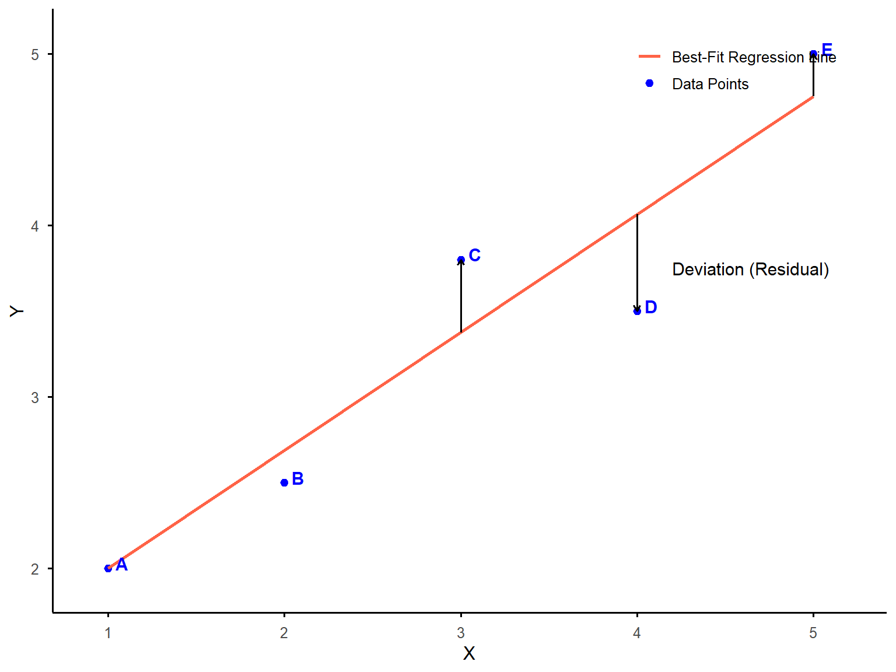
12 Chapter 12
Predicting an Outcome
Learning Objectives
By the end of this chapter, you will be able to:
Explain the concepts of predictor and criterion variables, derive the equation of a regression line using the method of least squares, and interpret the slope and intercept within the context of data analysis.
Identify and assess the key assumptions for multiple regression, including linearity, homoscedasticity, independence of errors, multicollinearity, and model specification, ensuring valid and reliable results in regression analyses.
Compute and interpret diagnostic measures such as Variance Inflation Factors (VIF), tolerance, and the coefficient of determination (\(R^2\)), and assess model fit to draw meaningful conclusions from regression analyses.
12.1 Introduction
In the last chapter, we reviewed the procedures to compute a correlation coefficient that indicates the extent to which two variables (\(X\) and \(Y\)) are related to each other. The value of r indicates the direction and strength of the relationship. Two variables change in opposite directions when r is negative, and two variables change in the same direction when r is positive. The closer r is to +1 or -1, the stronger the correlation and the more closely the two variables are related.
The strength of a correlation reflects how closely a set of data points fits a line of best fit on a scatterplot. This line is also called a regression line. We will now learn how to use the value of r to compute the equation of a regression line. We will then use this equation to predict values of one variable given known values of a second variable in a population, before incorporating additional variables into our predictions.
12.2 Fundamentals of Linear Regression
Linear regression is a statistical method used to determine the equation of a regression line for a set of data points and to assess how well this equation can predict values of one variable based on known values of another variable. In linear regression, we identify two types of variables:
Predictor variable, or known variable (X), is the variable with values that are known and can be used to predict values of another variable. We also call this variable an independent variable (IV).
Criterion variable, or to-be-predicted variable (Y), is the variable with unknown values that can be predicted or estimated, given known values of the predictor variable. We sometimes call this variable a dependent variable (DV) or an outcome variable.
As always, it is important to consider the data assumptions that must be met before performing any analysis. We will provide more details on some of these assumptions later, but the conditions that indicate data are a good fit for regression analysis include:
Linearity of the X-Y relationship: The relationship between the predictor and criterion variable should be linear.
No range restriction: The range of data should not be artificially limited, as it can affect the correlation and regression results.
Homoscedasticity: The variance of the residuals (errors) should be consistent across all values of the predictor variable.
No significant outliers: Outliers can disproportionately influence the regression line and distort results.
Sufficient sample size: The sample should be large enough to ensure that estimates of the correlation coefficient (\(r\)) and regression coefficients (\(b\)) are stable and reliable.
Linear regression allows us to find the equation of a line that best describes a set of data points, and test whether predictions made from this equation are statistically significant. Before we work through an example to answer these questions, let us first explain what the regression line is. Specially, we want you to know what it means to say that a straight line has the best fit to the data.
12.2.1 What Makes the Regression Line the Best-Fitting Line?
Once we have determined that there is a linear pattern in a set of data points using a scatterplot, we want to find a regression line, or a straight line that has the best fit. The criterion used to determine the regression line is sum of squares (\(SS\)), or the sum of the squared distances of data points from a straight line. The line, associated with the smallest total value for SS, is the best-fitting straight line, called the regression line. Remember, we don’t square the distances just to be complicated, it’s so all the values are positive, even if the actual value is below the expected value. Otherwise, one point that was very far above the line would cancel out a point that was equally far below. Instead, we want them to both count as being quite far away from the line, so we square the distance.
Suppose that we measure two variables, one predictor or independent variable plotted on the X-axis, and one criterion or dependent variable plotted on the Y-axis. Figure 12.1 shows a scatterplot with five data points (A, B, C, D, and E) along with the line of best fit. The arrow from each data point to the line represents the distance from each data point to the best-fitting line. As you see, all data points deviate from the line to some extent. Data point D (below the line) has the largest deviation from the line and A (above the line) has the smallest. To quantify these deviations, we square each distance to ensure all values are positive. The sum of squares (SS) in this example is the total of these squared deviations across all five data points. The regression line is defined as the one that minimizes this sum, providing the best possible fit to the data.
12.2.2 The Slope and Intercept of the Regression Line
As we learned during grade school, the equation \(y = mx+b\) represents the slope-intercept form of a linear equation. This equation describes a straight line on a Cartesian coordinate plane. You can think of the equation of regression as representing the same thing, but we use b to label the coefficients and a to represent the intercept. So, our new equation is \(Y = bX + a\).
The slope (b) of a straight line is used to measure the change in Y relative to the change in X. When X and Y change in the same direction, the slope is positive. When X and Y change in the opposite direction, the slope is negative.
The intercept (a) of a straight line is the value of Y when X = 0. It is where a straight line crosses the Y-axis on the graph.
The method of least squares is the statistical procedure used to compute the slope (b) and the intercept (a) of the best-fitting straight line or the ordinary least squares (OLS) regression line to a set of data points. This line minimizes the sum of the squared differences (residuals) between the observed data points and the values predicted by the line. By minimizing these squared differences, OLS ensures that the line represents the closest possible approximation of the relationship between the variables. This is why the regression line is often referred to as the least squares regression line.
We will walk through how to compute the slope and intercept for the dataset by using the sum of squares. The process is tedious in particular when the sample size is large. In practice, you will use statistical software to compute the slope and intercept using the method of least squares, but it is good to understand what the output actually means.
To use the method of least squares, complete the following three steps:
Step 1: Compute the preliminary calculations
Step 2: Calculate the slope (b)
Step 3: Calculate the Y-intercept (a)
Suppose a teacher wants to examine the relationship between the number of hours students spend studying for a quiz (predictor variable: X) and their quiz scores (criterion variable: Y). To better understand this pattern, the teacher conducts a linear regression analysis to find the best-fitting line that predicts quiz scores based on study time. In this example, we use a small dataset to illustrate the three steps involved in fitting a regression line. However, in practice, regression analysis is conducted with larger datasets. The teacher gathers data from four students:
| Predictor Variable | Criterion Variable |
|---|---|
| Study Hours (X) | Quiz score (Y) |
| 0 | 3 |
| 1 | 3 |
| 2 | 5 |
| 3 | 5 |
Step 1: Compute preliminary calculations.
We begin by making the preliminary calculations shown in the following table. The signs (+ and -) of the value that we measure for each variable are essential to making accurate computations. They tell us whether the actual value is above or below the regression line. The goal of this step is to compute the sum of squares needed to calculate the slope and intercept of the best-fitting line in regression analysis.
| X | Y | \(X - \bar{X}\) | \(Y - \bar{Y}\) | \((X - \bar{X})(Y - \bar{Y})\) | \((X - \bar{X})^2\) |
|---|---|---|---|---|---|
| 0 | 3 | -1.5 | -1 | 1.5 | 2.25 |
| 1 | 3 | -0.5 | -1 | 0.5 | 0.25 |
| 2 | 5 | 0.5 | 1 | 0.5 | 0.25 |
| 3 | 5 | 1.5 | 1 | 1.5 | 2.25 |
| \(\bar{X} = 1.5\) | \(\bar{Y} = 4\) | \(SS_{XY} = \sum (X - \bar{X})(Y - \bar{Y}) = 4\) | \(SS_X = \sum (X - \bar{X})^2 = 5\) |
The first two columns are observed values for X (number of hours) and Y (quiz score). But other parts of the chart may require some thinking to understand.
\(\bar{X}\): The mean of X values.
\(\bar{Y}\): The mean of Y values.
\(X - \bar{X}\): The deviation of each score (X) from the mean (\(\bar{X}\)).
\(Y − \bar{Y}\): The deviation of each score (Y) from the mean (\(\bar{Y}\)).
\((X − \bar{X})(Y − \bar{Y})\): The product of the deviation scores for X and Y.
\((X − \bar{X})^2\): The product of the deviation scores for X. This should look familiar from back when we learned about variance.
\(\sum(X − \bar{X})(Y − \bar{Y})\): The sum of products for X and Y. This is also referred to as the covariance of X and Y, or \(SS_{XY}\).
\(\sum(X − \bar{X})^2\): The sum of squares for X, which is represented as \(SS_X\).
It’s easy to get lost in all the S’s, X’s, and Y’s, so let’s break it down differently. First, consider why it’s important to understand how much X and Y deviate from their respective means. When determining the best-fitting line, a key factor is how much the values of X and Y vary. Are the data points widely spread out, or are they clustered closely together? Does X have a broad range while Y is more constrained, or vice versa? Or do both variables exhibit similar variability? A scatterplot provides a visual representation of this spread, while these calculations quantify it mathematically.
Next, we introduce a column where we multiply the two deviation scores and sum them. If you recall from our discussion on correlation, the numerator of the correlation formula was \(SS_{XY}\) - this represents the covariance, or how much the two variables vary together. Finally, in the last column, we calculate \(SS_X\), which when divided by \(n – 1\), gives us the variance of X.
Step 2: Calculate the slope (b).
It’s time to recall a fundamental math concept from grade school: the formula for slope as rise over run, or the change in Y divided by the change in X. Keep this general idea in mind as we walk through the actual calculations—it will help the process make more sense.
You can calculate the slope of an ordinary least squares (OLS) regression line by using the following equation:
\[ b = \frac{SS_{XY}}{SS_X} = \frac{\sum (X_i - \bar{X})(Y_i - \bar{Y})}{\sum (X - \bar{X})^2} \]
Go back to the table from earlier in the chapter and see what that represents. On top we have the sum of the changes in Y times the changes in X, and on the bottom we have the changes in X times the changes in X. If we cancel out changes in X from top and bottom, we have the changes in Y over the changes in X…which sounds a lot like rise over run. The slope of our regression line is:
\[ b = \frac{4}{5} = 0.8 \]
Step 3: Calculate the intercept (a).
Remember, our regression line formula is \(Y = bX + a\). We now have the value for b, but we still need a. If we have values for Y and X, we can plug them in and solve for a. But we can’t use any specific individual’s values because we don’t know that they fall exactly on the line. We do know one point that is always on the regression line, however, and that is (\(\bar{X}\), \(\bar{Y}\)). And we already calculated both of those values in the previous table. So, if we rearrange the formula for the slope of a line, we end up with:
\[ a = \bar{Y} - b\bar{X} \]
\[ a = 4 - [(0.8)(1.5)] = 2.8 \]
We now have our equation for least squares regression:
\[ \hat{Y}_i = 0.8X_i + 2.8 \]
where \(\hat{Y}_i\) (which you actually pronounce “Y-hat”) is the predicted value of Y for person i for a given value of Xi. The values of b and a are sometimes called regression coefficients.
What do we do with this equation? You might have wondered—when we discussed using a known variable X to predict an unknown variable Y—how that works if we don’t already know the values of Y for new cases. The key is that we first need a set of observed data, where we already have X and Y values for multiple individuals. Using these known values, we calculate the regression equation, which then allows us to make predictions about Y for new observations based on their X values.
So, is Y known or unknown? In our initial dataset, Y is known because we have chosen to measure it. However, in future scenarios, if our sample is representative of a larger population, we can use this equation to estimate Y for any given X value. For example, if we wanted to predict the outcome when X = 5, we would simply substitute 5 for X in the regression equation.
\[ \hat{Y}_I = 0.8(5) + 2.8 = 6.8 \]
Based on that equation, we would predict that for X = 5, Y would equal 6.8. Figure 12.2 shows our regression line passing through the point (5, 6.8).
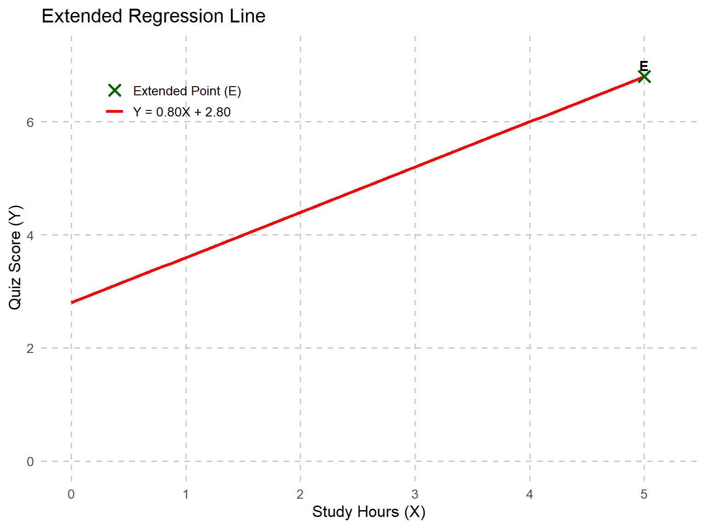
12.3 Conducting Regression Analysis with Sample Education Data
We are now going to use more complicated but realistic data to explain the process of regression analysis.
Imagine we want to determine whether student motivation can be used to predict math achievement. If a significant relationship exists, we could develop a predictive model based on this sample data. This model would allow us to estimate the math scores of future students using only their motivation scores, providing a useful tool for educators and researchers in understanding and supporting student performance.
We collected data from 100 high school juniors enrolled in an Algebra II course. At the beginning of the semester, students completed a motivation assessment (scored from 1 to 10), which measured their self-discipline, interest in math, and effort toward learning. Students took a state-mandated final exam at the end of the semester, with scores recorded on a 0-100 scale. To investigate this, we will run a simple linear regression analysis where:
Dependent Variable (Outcome): Math Final Exam Score
Independent Variable (Predictor): Motivation Score
We have three more steps, but this time they’re about the entire process of analyzing data with regression rather than just computing the equation of the line.
Step 1: Construct the regression model (i.e., estimate the regression coefficients)
Step 2: Assess the statistical adequacy of the “fit” of the regression model to the data
Step 3: Evaluate the practical utility of the fitted regression model
For now, we will only consider a case of simple linear regression in which the X-Y relationship must be linear, and there is only a single X. Using more than one predictor variable is known as multiple regression, which we’ll get to later this chapter.
Step 1: Construct the regression model.
Figure 12.3 provides a scatterplot showing math and motivation scores, which suggests that a straight-line regression model might be appropriate.

Next, we estimate the regression coefficients using least squares regression, which finds the best fitting straight line by minimizing the vertical distance, which is called error, between the data points in the scatterplot and the line.
\[ \hat{Y}_i = bX_i + a + \epsilon_i \]
That equation should look familiar, except that we’ve now included the error term, which we’ll explore in the next section. Recall that to calculate the regression coefficients, we needed to determine the mean of X, the mean of Y, the variance of X, and the covariance between X and Y—all of which we previously computed by hand. However, when n = 100, performing these calculations manually becomes impractical. Instead, we rely on statistical software to generate these values, allowing us to focus on understanding and interpreting the regression analysis rather than manually computing each step.
First, let’s look at descriptive statistics for math and motivation scores.
| Variable | N | Mean | SD | Variance | SS | \(SS_{XY}\) | Correlation (\(r\)) |
|---|---|---|---|---|---|---|---|
| Motivation Score | 100 | 7.86 | 0.70 | 0.49 | 48.87 | 303.82 | 0.54 |
| Final Exam Score | 100 | 82.59 | 8.02 | 64.28 | 6364.12 |
We could now plug those values into the same formula we used before to calculate the slope.
\[ b = \frac{SS_{XY}}{SS_X} = \frac{303.82}{48.87} = 6.22 \]
This means that for every one-unit increase in motivation scores, we can expect an average increase of 6.22 points in final exam scores. Now, the next step is to calculate the intercept, which represents the predicted exam score when motivation is zero.
\[ a = \bar{Y} - b\bar{X} = 82.59 - (6.22)(7.86) = 33.70 \]
Statistical software often provides both standardized and unstandardized estimates for coefficients. The coefficients we just calculated are unstandardized, meaning they retain the original metric of the scores.
Step 2: Assessing the statistical adequacy of the “fit” of the regression model to the data.
There are two primary ways to assess the fit of a regression model (aside from statistical significance, which we will discuss later in the chapter): the accuracy of the predictions and the proportion of variation explained by the model.
Prediction Accuracy
Let’s take a few steps back and imagine there is no known independent variable that could be used to predict another variable. For example, suppose you wanted to predict a student’s final exam score, but you don’t have their motivation score. What is your best guess for the student’s final exam score? Probably the overall average exam score is the best you can do.
Now suppose you do have access to the student’s motivation score, and you have the regression equation we generated above. Now, your best guess is \(\hat{Y}_i\). However, the prediction equation is not perfect, and there will be some amount of prediction error. Therefore, for any given value of X for the ith student, there are three sources of deviation in Y.
(\(Y_i − Y\)) = total deviation; the deviation between the observed Y and the average Y (or, \(\bar{Y}\)). This is the amount that you were “off” when you just used the average math score to guess this individual’s score.
(\(\hat{Y}_i - \bar{Y}\)) = explained deviation by regression or model; the deviation between the average of Y (or, \(\bar{Y}\)) and the predicted Y (or, \(\hat{Y}\)). This is the improvement of your prediction using the regression model.
(\(Y_i - \hat{Y}_i\)) = error or unexplained deviation; the deviation between the observed Y and the predicted Y (or, \(\hat{Y}\)). This is also known as residual variance.
Figure 12.4 labels all three of those sources of deviation, with the total on the left, then error deviation above explained deviation on the right.
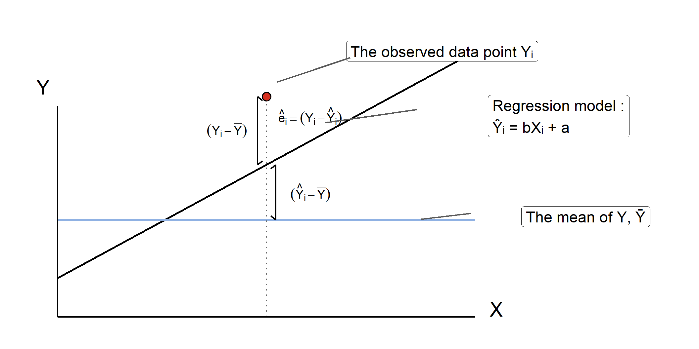
When we use least squares regression, we’re finding the regression line that minimizes the error, or in other words, minimizing the value of \(\sum(Y_i - \hat{Y}_i)\). But remember, if we just use the actual deviations, those will add up to zero, so instead we square them. For all students in the sample:
\[ \sum (Y_i - \bar{Y})^2 = \sum (Y_i - \hat{Y}_i)^2 + \sum (\hat{Y}_i - \bar{Y})^2 \]
\[ SS_{\text{total}} = SS_{\text{residual}} + SS_{\text{regression}} \]
| Sum of Squares | Value |
|---|---|
| SS Total | 6364.12 |
| SS Residual | 4475.42 |
| SS Regression | 1888.70 |
\[ 6364.12 = 4475.42 + 1888.7 \]
These equations are just representations of the previous figure. We have residual variation plus explained (or regression) variation on the right, and they equal total variation on the left. All of this is leading up to the way we measure the accuracy of our prediction: the standard error of the estimate. Remember, standard deviation from the mean indicates the average distance between each data point and the mean. Similarly, the standard error of the estimate measures the standard deviation of data points in the sample from the regression line. Standard deviation is the square root of the variance, and the standard error of the estimate is the square root of the variance for residual (error) variation.
When calculating standard deviation, we take the square root of the sum of squared deviations from the mean, divided by the degrees of freedom. Mathematically, this is expressed as:
\[ S_y = \sqrt{\frac{\sum (Y - \bar{Y})^2}{N - 1}} = \sqrt{\frac{SS_{\text{total}}}{N - 1}} \]
This is something we covered early in this book, so don’t worry too much if it looks unfamiliar now. We just want you to see the similarity to the formula for the standard error of the estimate. This time we’re looking at residual variation (or error variation) rather than total, and degrees of freedom are N – 2. The formula for the standard error of the estimate is:
\[ S_{y - \hat{y}} = \sqrt{\frac{\sum (Y - \hat{Y})^2}{N - k - 1}} = \sqrt{\frac{SS_{\text{residual}}}{N - 2}} \]
Another name for SS residual/(N - 2) is Mean Square Residual. If we take the square root of 45.67, we get 6.76, which is the standard error of the estimate for this regression equation. In other words, the average predicted math score (or \(\hat{Y}\)) is off by about 6.76 points. Is that a good prediction? Well, if you look back at the descriptive statistics, you can see that the standard deviation of final exam scores is about 8.02, so if we’re just using the average score to predict any given individual student’s score, we can expect to be off by about 8.02 points in either direction. With our regression equation, we’ve reduced that value somewhat, and now we’re only likely to be off by around 6.76 points.
Proportion of Variation Explained, \(R^2\) (Coefficient of Determination)
The second way to assess fit is to look at how much of the variation in the dependent variable (final exam scores) can be explained by variation in the independent variable (motivation scores). The proportion of variance explained in regression is a measure of how well the independent variable(s) explain the variability in the dependent variable. This measure is often expressed as the coefficient of determination (\(r^2\) or \(R^2\)). \(R^2\) represents the proportion of the total variance in the dependent variable (Y) that is explained by the independent variable (X) through the regression model. Remember this equation from earlier about the sources of variation?
\[ SS_{\text{total}} = SS_{\text{residual}} + SS_{\text{regression}} \]
When we were estimating accuracy, we were interested in the residual variation. This time, we’re interested in the variation that is explained by the model.
\[ R^2 = \frac{SS_{\text{explained}}}{SS_{\text{total}}} = \frac{1888.7}{6364.12} = 0.297 \]
In other words, it represents the ratio of explained variation to total variation in the dependent variable. This information is typically included in the standard output of a regression analysis, or at the very least, can be requested as part of the results.
\(R^2\) for this model is 0.297, meaning that approximately 30% of the variation in final exam scores among high school juniors can be explained by differences in motivation scores. \(R^2\) ranges from 0 to 1, where 0 means the model explains none of the variance in Y, and 1 means it explains all the variance. A higher \(R^2\) value suggests that the predictor variable(s) provide a stronger explanation of the variation in the dependent variable.
The next value reported is Adjusted \(R^2\), which is adjusted based on how many predictors are included in your model. This matters more when we have more than one predictor for multiple regression. In this case, the values of R2 and Adjusted \(R^2\) are almost the same.
We will explore Adjusted \(R^2\) in more detail later in this chapter. However, it is important to note that unlike \(R^2\), which always increases when more predictors are added (even if they are not meaningful), Adjusted \(R^2\) accounts for the number of predictors, and only increases if the new predictor improves the model more than what would be expected by chance alone.
In other words, adding meaningless predictors reduces Adjusted \(R^2\) and in some cases, it can even become negative, indicating that the additional predictors do not contribute useful information to the model.
\[ R^2_{adjusted} = 1 - \left( \frac{(1 - R^2)(n - 1)}{n - p - 1} \right) \]
, where n is the number of observations and p is the number of predictors.
Step 3: Evaluate the practical utility of the fitted regression model.
With the available information, we must now decide whether to use, modify, or discard the fitted regression model. While metrics such as \(R^2\) and the standard error of the estimate can help assess the model’s statistical validity, we must also determine its practical value.
For example, do the results hold significance for the field? Are they publishable? Another important consideration is whether the model performs consistently across different subgroups. Often, these questions cannot be answered solely through statistics—they require a deep understanding of the existing literature, context, and practical implications.
That being said, statistical significance remains an important factor to consider when deciding whether to use, refine, or discard the model.
12.4 Testing Regression Slopes for Statistical Significance
In a simple linear regression analysis, we run two separate significance tests. One is for the regression model as a whole. This test uses the F distribution. You can also test the significance of each coefficient individually to determine if the slope (b) is significantly different from 0 as well as if the intercept (a) is statistically different from zero, which uses the t distribution. When your model includes only one predictor variable, the statistical significance of the overall model and the significance of the individual coefficient will always yield the same result. This is because, in simple regression, the predictor’s contribution to explaining variance in Y is identical to the model’s overall explanatory power.
For now, we will focus on testing the individual coefficient, so let’s go back to our regression equation. The slope we calculated was \(b = 6.22\). This is subject to sampling error like any other statistic, so we need to test it. This means we follow the four steps that we’ve used before.
Step 1: State the hypothesis.
The null hypothesis (\(H_0\)) states that there is no linear relationship between the independent variable (X) and the dependent variable (Y), implying that the slope of the regression line is 0. The alternative hypothesis (\(H_A\)) posits that there is a significant linear relationship between X and Y, meaning the slope of the regression line is not 0. By testing these hypotheses, we determine whether changes in X are significantly associated with changes in Y, and thus, whether the regression line provides meaningful predictions for the data.
\(H_0: B = 0\), changes in Y are not related to changes in X.
\(H_A: 𝐵 \ne 0\), changes in Y are related to changes in X
In our example,
\(H_0\): Changes in final exam scores (Y) are NOT related to changes in motivation scores (X).
\(H_A\): Changes in final exam scores (Y) ARE related to changes in motivation scores (X).
or we can simply write:
\[ H_0: B = 0 \] \[ H_A: B \ne 0 \]
Note that we use \(B\) instead of \(b\) to distinguish it from the sample statistic (\(b\)).
Step 2: Set the criteria for a decision and evaluate data.
We will use a 0.05 level of significance
df for the t test is equal to the sample size minus 2 or (N - p - 1)
The sample size minus the number of predictors in the model -1 (1 for each variable, X and Y)
Because N = 100, df = 98
The critical value for this two-tailed test is \(\pm1.98\) , shown in figure 12.4.
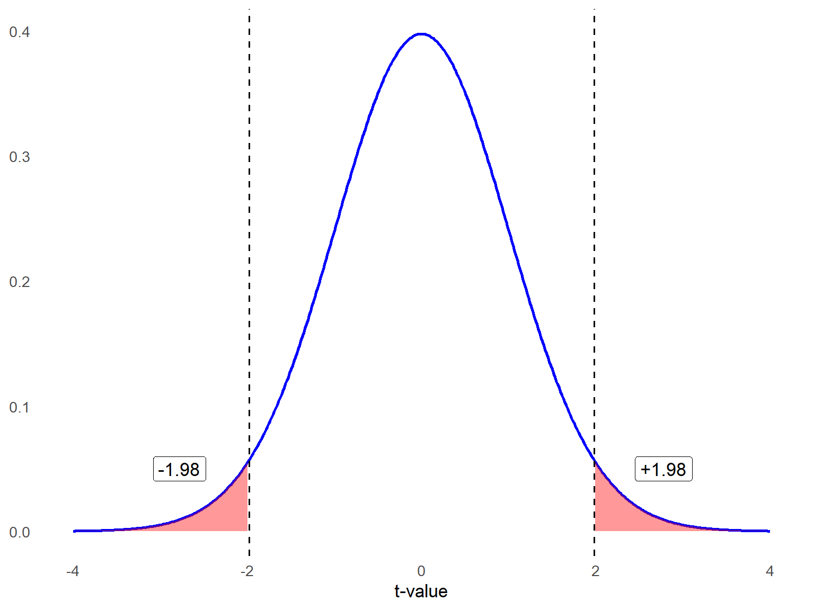
Linear regression relies on several important assumptions above and beyond those listed earlier in the chapter to ensure that the results are valid and reliable. The first assumption is linearity, meaning there should be a straight-line relationship between the dependent variable (the outcome being predicted) and each of the independent variables (the predictors). For example, if a school administrator wants to predict student test scores based on the number of hours students spent preparing for exams, there should be a roughly linear relationship between preparation time and scores. If the relationship is curved—say, where additional study time beyond a certain point shows diminishing returns—then the linearity assumption would be violated, and the regression model may not provide accurate predictions.
Another key assumption is the independence of errors, which means the errors (the differences between actual and predicted values) should not be related to one another. This assumption is particularly important when analyzing data collected over time or across groups. For instance, if a principal is studying the relationship between teacher professional development hours and student achievement across several years, the test score data from one year could influence the next year’s results due to shared factors like evolving curriculum or teacher collaboration. A violation of this assumption might indicate that patterns, like trends over time, are not fully captured by the model.
The third assumption is homoscedasticity, which means that the errors should have a consistent spread across all predicted values. This assumption is violated if the variability in errors increases or decreases depending on the value of the predictors. For example, when examining the relationship between high school GPA and college readiness test scores (like SAT or ACT), the errors might be small for students with average GPAs but larger for students with very high or very low GPAs. This could happen because other unaccounted factors, like extracurricular involvement or test anxiety, might play a bigger role at those extremes.
Another critical assumption is the normality of errors, meaning the residuals (errors) should follow a normal, bell-shaped distribution. This is important for conducting statistical tests and accurately interpreting the results. For example, if a university researcher is predicting student retention rates based on variables like campus engagement and financial aid, the prediction errors should cluster around zero, with few extreme errors. If errors are skewed—perhaps because certain student subgroups (like first-generation students) behave differently—the results might not be reliable.
Step 3: Compute the test statistic.
Test statistic (t) and degrees of freedom
Let’s determine whether the slope in our sample dataset is significantly different from zero. Typically, we would use statistical software for these calculations, but since we have already computed the descriptive statistics, we can work through the calculations by hand.
If you recall, calculating a \(t\) statistic always involves comparing two values—whether it’s two group means or a group mean and a reference point—and dividing the difference by some form of standard error. In this case, we follow the same logic:
We subtract zero from the estimated beta coefficient (our slope).
We then divide this difference by the standard error of the beta coefficient (which is not the same as the standard error of the estimate discussed earlier).
This approach allows us to assess whether the slope is statistically significant and meaningfully different from zero.”
- Let’s start with the equation for the t statistic:
\[ t = \frac{b - B}{SE_b} \]
Because we expected B = 0 under the null hypothesis,
\[ t = \frac{b - 0}{SE_b} = \frac{b}{SE_b} \]
We have already calculated the slope as b = 6.22, but how do we calculate the standard error of the slope? Here is the formula:
\[ SE_b = \frac{S_{y-\hat{y}}}{\sqrt{\sum (X_i - \bar{X})^2}} \]
where the standard error of the residuals or errors (s) is square value of the standard error of the estimate (also called Mean Squared Error) equal to:
\[ S_{y-\hat{y}} = \sqrt{\frac{\sum (Y - \hat{Y})^2}{N - 2}} = \sqrt{\frac{SS_{\text{residual}}}{N - 2}} \]
\(\hat{y}_i\) represents the predicted values of Y using the regression line
n equals the number of data points in our dataset
\[ S_{y-\hat{y}} = \sqrt{\frac{4475.42}{100 - 2}} = 6.76 \]
Now, we have all the values we need to calculate the standard error of the slope.
\[ SE_b = \frac{6.76}{\sqrt{48.87}} = 0.96 \]
Compute the t statistic.
\[ t = \frac{6.22}{0.96} = 6.48 \]
Calculate the degrees of freedom.
\[ df = 100 - 2 = 98 \]
Step 4: Make a decision.
Before starting the analysis, we decided to use an alpha level of .05 for this two-tailed test. Since the obtained t statistic (6.48) is greater than the critical value (1.98), we reject the null hypothesis. Therefore, we conclude that, on average, motivation scores significantly predict final exam scores. From our earlier calculations, we know that motivation scores explain approximately 30% of the variation in the dependent variable.
APA style sample write-up: A simple linear regression was conducted to examine whether motivation scores significantly predict final exam scores. The results of the regression indicated that the model was statistically significant, \(F(1, 98)* = 41.36, \, p < .05\), and explained 29.7% of the variance in final exam scores, The unstandardized regression coefficient for motivation was \(b = 6.22, \, t(98) = 6.43, \, p < .001\), indicating that for every one-unit increase in motivation score, final exam scores increased by approximately 6.22 points. These findings suggest that higher motivation scores are significantly associated with higher final exam scores.
*The omnibus F test will be explained in the next section.
12.5 Multiple Regression: Predicting an Outcome with Multiple Predictors
So far, we have learned the fundamentals of simple linear regression, where we use changes in one variable to predict changes in another. Now, let’s extend this concept by incorporating additional predictor variables.
While there is a lot to cover, multiple regression is a powerful and widely used method in research and practice. It allows us to better understand relationships between multiple predictors and an outcome variable. Since you will likely use and encounter multiple regression frequently in your career, developing a strong understanding of its principles is essential.
Here’s the general outline for this section so you don’t get lost.
Getting started – What variables should you include and how? What do you need to check before running your analysis?
Assumptions & diagnostics – What you need to check to avoid possible problems with your results.
Basics of multiple regression – Running the analysis and interpreting results, understanding the effects of each predictor separately, and reporting results.
12.5.1 Part 1: Getting Started
Multiple regression uses two or more predictors, or independent variables, to predict variation in a quantitative outcome, or dependent variable. Sometimes there are multiple factors influencing an outcome, and you want to control for one factor to understand the influence of another. You can do this by including both variables in a regression model. Here is what the statistical model for multiple regression looks like:
\[ Y_i = \beta_0 + \beta_1 X_{i1} + \beta_2 X_{i2} + \cdots + \beta_p X_{ip} + \epsilon_i \quad \text{for } i = 1, 2, \ldots, n \]
\(Y_i\) is the score of the ith subject (i = 1, 2, …, n) on the dependent variable.
\(B_0\) represents the intercept in multiple regression, which is the predicted value of the dependent variable when all predictor variables are zero. In simple linear regression, we previously used the letter a to denote the intercept, but in multiple regression, 𝐵0 is the standard notation.
\(B_1\) is the slope (or regression coefficient) associated with the predictor 𝑋1, and reflects the expected change in Y for each one-unit increase in X with the other predictors held constant.
\(B_2\) through \(B_p\) are the regression coefficient for predictors 2 through p. In this context, p refers to the number of predictors in the model and is not related to the p value used for statistical significance testing.
\(\epsilon_i\) is the error term.
Considerations for Building a Multiple Regression Model
When you are planning to analyze data with multiple regression, you need to decide what independent variables to include. There are several factors to consider when making this decision.
Sample size: There is no strict sample size requirement for multiple regression analysis, as the ideal sample size depends on the complexity of the model. However, various rules of thumb exist. A common guideline suggests having at least 10 cases per predictor variable. For example, you should aim for a sample size of at least 50 cases if you plan to include 5 predictors.
This estimate is only a rough guideline, as the actual sample size needed to detect a statistically significant effect depends on the effect size—or how well the independent variables predict the outcome. To determine a more precise sample size, researchers can use power analysis, which calculates the minimum number of observations needed to reliably detect an effect.
Purpose of model: Is your regression model exploratory or explanatory?
If your research is relatively new and lacks a strong theoretical framework, your focus may be on exploring new significant predictors.
If your study is grounded in an established research base and aims to test a specific theory, your analysis is explanatory.
In general, it is best to use theory whenever possible when designing a regression model. A strong theoretical foundation not only guides model building but also helps in interpreting and discussing results when significant predictors are identified. Without a theoretical framework, explaining your findings can be more challenging.
Parsimony: One key metric for assessing how well a regression model predicts the dependent variable is \(R^2\). We will discuss this in more detail later, but an important consideration is that \(R^2\) always increases as more predictors are added, regardless of whether they meaningfully contribute to the model. This can make it tempting to keep adding predictors in an attempt to improve the model. However, doing so can lead to overfitting, which is a situation where the model becomes overly complex and fits the training data too closely. Instead of capturing the true underlying relationship between variables, an overfitted model captures random noise or fluctuations, reducing its ability to generalize to new data.
To avoid overfitting, predictors should be selected based on theoretical justification from your literature review. Ideally, they should be known predictors of your outcome variable or variables for which you have a strong rationale for testing their influence.
Data Exploration and Preparation
Once you have an idea about which predictor (independent) variables you want to include, you start your analysis by looking at the descriptive statistics for your independent variables and dependent variable. What should you check?
Frequencies
If you have dichotomous variables (e.g., enrolled in gifted education program/not enrolled in gifted education program), check to see if you have sufficient numbers in each category. It’s okay if the groups are not the same size, but we suggest having at least 10 cases in each group.
Before conducting a regression analysis, it is essential to check for missing data within your dataset. If a variable contains a significant amount of missing data, it can pose a challenge because regression analysis typically employs listwise deletion to address missing values. This means that any case with a missing value in one or more variables will be excluded from the analysis entirely. As a result, extensive missing data can lead to a substantial reduction in the sample size, potentially affecting the validity and generalizability of the results. Therefore, identifying and addressing missing data through appropriate techniques—such as imputation or sensitivity analysis—can help mitigate these issues.
Correlations
It is important to assess the correlation between the dependent variable and each independent variable. This helps determine whether a relationship exists and provides insight into the strength and direction of each predictor’s association with the dependent variable. However, correlation alone does not fully determine a variable’s importance in the model. Even if an independent variable shows a weak correlation with the dependent variable, it may still be theoretically significant or serve as a crucial control variable to better isolate the effects of other predictors. This highlights the importance of reviewing the existing literature on the dependent variable to make informed modeling decisions.
Intercorrelations among independent variables can indicate potential issues with multicollinearity, which occurs when predictors are highly correlated with one another. While we will explore this topic in greater detail in Part 3, a general guideline is that a correlation of r = 0.7 or higher between two independent variables may signal a multicollinearity concern. If such high correlations are present, further investigation will be necessary later in the analysis to determine their impact on the regression model and whether corrective measures, such as removing or combining variables, are needed.
Outliers
Unusual observations can disproportionately affect model-fitting and inferences about your results. It’s a good idea to check the minimum and maximum values for each of your predictors to see if you have any extremely unusual cases, which can sometimes be due to data entry errors. But there are also three diagnostic indices for outliers: distance, leverage, and influence.
Distance: This metric assesses how well the model fits the data by measuring the difference between observed \((Y_i− \hat{Y}_i)\). Larger differences suggest greater random error or potential systematic issues due to outliers. A commonly used measure of distance is the studentized residual, which expresses how far a residual deviates from zero in standard deviation units.
Leverage: This measure helps identify potential outliers based on predictor variables. Leverage values close to \(\frac{1}{N}\) are generally unremarkable, while values exceeding \(\frac{3(p+1)}{N}\), where \(p\) is the number of the predictors, may indicate influential points that require further investigation.
Influence: Influence combines both distance and leverage to detect observations that significantly impact the regression model. One widely used measure is Cook’s D, which evaluates how much the regression coefficients would change if a particular data point were removed. Observations with Cook’s D values greater than 1 are often flagged as potentially influential.
In short, an outlier is a data point that does not follow the general trend of the dataset. An outlier has high leverage if the value on any independent variable (or combination of independent variables) is extremely high or low. A data point with high leverage has the potential to be influential (i.e., change the results of the model), but not all high leverage data points are highly influential.
Recoding variables (if necessary)
Before conducting a regression analysis, ensure that your data are properly formatted and ready for use. This often involves data cleaning to transform categorical responses into numerical values suitable for analysis. For instance, if survey respondents answered “Yes” or “No” to a question, you must recode these responses as 1 and 0, respectively. Typically, the focal group (the category of interest) is coded as 1, while the reference group is coded as 0. Properly preparing your data in this way ensures that your variables are appropriately structured for regression modeling.
Another common mistake in regression analysis occurs when dealing with categorical variables with more than two possible responses. If your data contains a categorical variable with multiple groups, you cannot treat it as a continuous variable. Doing so would imply an order or numeric relationship that does not exist.
For example, suppose you are analyzing preferred instructional style, and your dataset codes them as:
1 = lecture-based
2 = discussion-based
3 = hands-on
4 = self-paced
You cannot use this as a single independent variable in regression, as it would be incorrect to assume that “self-paced” (coded as 4) is four times “lecture-based” (coded as 1). To properly include categorical variables in a regression model, you must create dummy variables or use statistical software that recognizes the variable’s categorical nature and adjusts appropriately. Dummy coding is a method of converting categorical variables into a set of binary variables (0s and 1s) that can be used as predictors in regression and other statistical models. If you manually create the set of dummy variables, you convert each category into a separate binary variable (0 or 1), except for one category, which serves as the reference group.
For instance, you could create the following three dummy variables:
Discussion-based (1 = discussion-based, 0 = Otherwise)
Hands-on (1 = hands-on, 0 = Otherwise)
Self-paced (1 = self-paced, 0 = Otherwise)
The omitted category, lecture-based, becomes the reference group, meaning that the regression coefficients for other instructional styles represent their differences relative to lecture-based. Using dummy coding correctly prevents incorrect assumptions about numerical relationships between categories and allows for meaningful comparisons between groups. Choosing an appropriate reference category depends on the context of your study and research question. The choice of the reference group affects the interpretation of results but not impact the overall validity of the model. Dummy variables also collectively capture the categorical variable without implying order or magnitude.
12.5.2 Part 2: Assumptions of Multiple Regression and Data Diagnostics
Earlier in the chapter, we reviewed data assumptions for linear regression. The same assumptions apply for multiple regression. These are:
Linearity
Independence of errors
Homoscedasticity
Normality of errors
Let’s break the normality of errors assumption down a little more. The key here is that error should be independent and randomly distributed. This assumption is closely tied to the independence of observations, meaning that no individual data point should influence another. If observations are not independent (e.g., if data points are clustered, repeated measures are used, or there is some form of dependence between cases), the errors may also become correlated, violating the assumption of independence in regression analysis. This can lead to biased estimates and incorrect inferences. This assumption can be violated in education studies, particularly when data from students in the same school or under the same teacher share common influence, such as teaching style, curriculum, or resources. For example, if you’re studying the relationship between homework completion and test scores with student samples from multiple schools, students in the same class might perform similarly due to the same instruction quality, violating the independence assumption. In such cases, advanced techniques like hierarchical linear modeling or clustered standard errors may be necessary. If you can see patterns in your errors, or residuals, then your independent variables are not capturing all the variability they should. In general, the distribution of residuals should be normal and centered on zero, meaning that over-and under-prediction occur evenly.
In addition to the prior assumptions, multiple regression introduces additional considerations due to the presence of multiple independent variables. Those are:
Multicollinearity
No endogeneity
Correct model specification
Multicollinearity occurs when there is a strong linear relationship between two or more independent variables in a regression model. Ideally, independent variables should be uncorrelated, but it is common for variables to have intricate relationships that are challenging to partial out in social science research. In multiple regression, we try to isolate the unique effect of each independent variable on the dependent variable while holding all other predictors constant. However, when two independent variables are highly correlated, changing one often means changing the other in a similar way, making it difficult to determine their distinct contributions.
Imagine we are studying the effect of property tax revenue (\(X_1\)) and school district wealth (\(X_2\)) on per-student funding. These two variables are highly correlated—school districts in wealthier areas typically generate more revenue from property taxes due to higher property values. If both are included in a multiple regression model predicting per-student funding, it becomes difficult to determine whether funding differences are driven more by property tax revenue or by the overall wealth of the district, as these factors move together. To properly separate their effects, we would need data from districts where these relationships are not perfectly aligned, such as districts with high property tax revenues but relatively lower overall wealth, or high overall wealth but lower property tax revenues—scenarios that are less common due to the typical structure of school finance systems.
Why does multicollinearity matter? High multicollinearity results in coefficient estimates that can swing wildly based on which other independent variables are included. They are very sensitive to small changes in the model (i.e., untrustworthy βs). You also have less precision, meaning your standard errors increase and you can’t trust the p values to identify independent variables that are statistically significant. A classic sign of near-perfect multicollinearity is when you have a high R2 but none of the variables show significant effects. However, you can still have high multicollinearity without having a high R2.
If multicollinearity is detected, should you remove a variable? Not necessarily.
The severity of problems increases with the degree of multicollinearity, so if the issue is only moderate, it may not require correction.
Multicollinearity impacts only the correlated independent variables, but it is important to note that two variables may jointly show high correlation with a third, even if their pairwise correlations are not strong. If multicollinearity arises among covariates but does not affect your main independent variable, you can still interpret its results reliably.
Multicollinearity affects the coefficients of independent variables and p values, but not the overall model predictions or fit statistics. If your primary goal is using the model to make predictions, rather than interpreting individual coefficients, multicollinearity may be less of a concern.
It may be tempting to remove one of two highly correlated independent variables, such as student age and student grade level, if they are essentially measuring the same concept. In that case, it makes sense to drop one. However, if both variables are included based on theoretical justification and prior research, you should not remove one solely to reduce multicollinearity.
Why? Remember when you learned about variance, and the tradeoffs between bias and precision? Removing a key independent variable biases the estimates of other predictors. While removing a variable may improve statistical precision, it can also introduce omitted variable bias, making it difficult to interpret results accurately. Instead, you can report the standard errors and acknowledge potential imprecision rather than altering the model structure unnecessarily
Two diagnostics that tell you how much of a problem multicollinearity is creating for your model are Variance Inflation Factors (VIF) and Tolerance. We will revisit those concepts later in the chapter. For now, let’s move to the next assumption.
A more complex assumption is no endogeneity, meaning that the predictors should not be influenced by the dependent variable or share a relationship with the error term. For instance, consider a study examining how access to advanced placement (AP) courses influences college enrollment rates. If higher college enrollment rates also encourage schools to expand AP offerings, there’s a two-way relationship that violates this assumption. This requires careful study design or advanced statistical methods to address.
Another essential assumption is correct model specification, which means including all relevant variables while excluding unnecessary ones. Ensuring correct model specification involves theory-driven variable selection and testing models for robustness to avoid either omitting key variables or overfitting the model with irrelevant predictors.
Under-specification (Omitted Variable Bias): If a school district administrator predicts student success on state exams but fails to include key predictors like socioeconomic status or English language proficiency, the model will produce biased estimates.
Over-specification (Including Irrelevant Variables): Adding unnecessary variables, such as the distance a student lives from school, might not improve predictions but could increase model complexity without adding explanatory power.
12.5.3 Part 3: Basics of Multiple Regression: Hypothesis Testing and Interpretation
As with simple linear regression, we rely on the Principle of Least Squares to estimate the slopes in a regression model subject to the constraint that the \(SS_{error}\) or \(SS_{residuals}\) is minimized:
\[ SS_{residuals} = \sum (Y_i - \hat{Y}_i)^2 \]
where \(\hat{Y}_i\) is the predicted (fitted) value and is obtained after estimating model parameters. Let’s walk through a brief example. A school district wants to understand how different factors predict average standardized test scores. They conducted a multiple regression analysis using student-teacher ratio, average parental education level (measured in years), school funding per student, percentage of students on free/reduced lunch, and student attendance rate. This is a very large school district comprised of 56 schools.
\[ \hat{Y}_i = b_0 + b_1 X_{S\text{-}ratio} + b_2 X_{\text{Parent ED}} + b_3 X_{\text{Funding}} + b_4 X_{\text{Lunch}} + b_5 X_{\text{Attendance}} \]
Step 1: State the hypothesis.
There are two types of hypotheses to test in multiple regression: the omnibus test and tests for individual predictors. The omnibus hypothesis test assesses whether the overall model is statistically significant. Specifically, it tests the null hypothesis that all regression coefficients for the predictors (except the intercept) are equal to zero. This test evaluates whether at least one predictor variable has a statistically significant relationship with the dependent variable. The omnibus null hypothesis can be represented by:
\[ H_0: \beta_1 = \beta_2 = \beta_3 = \cdots = \beta_p = 0 \]
The alternative omnibus hypothesis is simply at least one regression coefficient is not 0. It can be represented as:
\[ H_A: \text{at least one } \beta_i \neq 0 \]
In our example, we have five predictors to predict standardized test scores. Thus, our hypotheses are:
\[ H_0: \beta_{S\text{-}ratio} = \beta_{\text{Parent ED}} = \beta_{\text{Funding}} = \beta_{\text{Lunch}} = \beta_{\text{Attendance}} = 0 \]
\[ H_A: \text{at least one } \beta_i \neq 0 \]
If the omnibus test is significant, we then examine each predictor individually to identify which variables contribute meaningfully to the model.
For each predictor 𝑝, we set the following hypotheses:
\(H_0: B_p = 0\), the predictor has no effect on the dependent variable.
\(H_A: B_p \ne 0\), the predictor has a significant effect on the dependent variable.
Since our model includes five predictors, we conduct five separate hypothesis tests, each testing whether the respective coefficient is significantly different from zero.
Step 2: Set the criteria for a decision and evaluate data.
We will use a 0.05 level of significance for the omnibus F test.
The degrees of freedom (df) for the F test in regression are determined as follows: for the regression component, the df equals the number of predictors in the model (p). For the error term, the df is calculated as the sample size (N) minus the number of predictors (p) minus 1, expressed as (n - p - 1). This accounts for one degree of freedom for each independent variable (X) and the dependent variable (Y). Because n = 56, the F ratio follows the F distribution with (5, 50).
The critical value at \(\alpha = 0.05\) is 2.40.
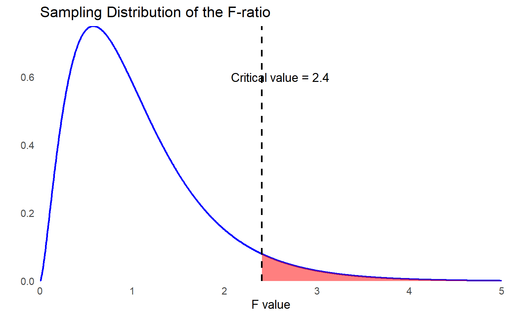
When the omnibus test is significant, we proceed with hypothesis testing for individual independent variables. Using \(\alpha = 0.05\) for each test, the test statistic follows a \(t\) distribution with degrees of freedom calculated as \(df = n – p - 1\). In this case, with \(n = 56\) observations and \(p = 5\) predictors, the degrees of freedom for each \(t\) test is: \(df = 56 – 5 – 1 = 50\).

While we will not cover the process of assessing whether the data meet multiple regression assumptions here, it is always essential to visualize the data through graphs and compute descriptive statistics to identify potential violations. Checking assumptions—such as linearity, normality of residuals, homoscedasticity, and multicollinearity—ensures the validity and reliability of the regression results.
Step 3: Compute the test statistic.
Similar to ANOVA, we use the F test for the omnibus hypothesis. To run the F test, we need MS regression and MS residual values. The table below summarizes how to calculate the degrees of freedom, sum of squares, mean square, and F statistic. Remember that p indicates the number of predictors and n indicates the sample size.
| Source | Degrees of Freedom (df) | Sum of Squares (SS) | Mean Squares (MS) | F |
|---|---|---|---|---|
| Regression (Model) | \(p\) | \(\sum (\hat{Y}_i - \bar{Y})^2\) | \(\dfrac{SS_{\text{regression}}}{df_{\text{model}}}\) | \(\dfrac{MS_{\text{model}}}{MS_{\text{error}}}\) |
| Error (Residual) | \(n - p - 1\) | \(\sum (Y_i - \hat{Y}_i)^2\) | \(\dfrac{SS_{\text{error}}}{df_{\text{error}}}\) | |
| Total | \(n - 1\) | \(\sum (Y_i - \bar{Y})^2\) | \(\dfrac{SS_{\text{total}}}{df_{\text{total}}}\) |
Similar to what we have already learned, simply add the \(SS_{Regression}\) and \(SS_{Error}\) to get \(SS_{𝑇𝑜𝑡𝑎𝑙}\). You also do the same thing for your \(df_{Regression}\) and \(df_{Error}\) to get \(df_{𝑇𝑜𝑡𝑎𝑙}\).
\[ F = \frac{MS_{\text{regression}}}{MS_{\text{residual}}} \sim F_{(df_{\text{regression}}, \, df_{\text{error}})} \]
There are 5 degrees of freedom in the numerator (\(df_{Regression}\) ), representing the 5 predictors (independent variables), and there are 50 degrees of freedom in the denominator (\(df_{Error}\)), representing 56 schools – 5 predictors – 1. The following table contains the results of a regression analysis on the data.
| Source | Degrees of Freedom | Sum of Squares | Mean Squares | F |
|---|---|---|---|---|
| Regression | \(5\) | \(2500\) | \(500\) | \(16.67\) |
| Error (residual) | \(50\) | \(1500\) | \(30\) | |
| Total | \(55\) | \(4000\) |
\[ F = \frac{MS_{\text{regression}}}{MS_{\text{residual}}} = \frac{500}{30} = 16.67 \sim F_{(5, 50)} \]
While the statistical software you use will provide the p value, let’s look at the critical values of F distribution table in the back of the book to determine if we have a significant result. Find where 5 degrees of freedom in the numerator and 50 degrees of freedom in the denominator intersect, which identities a critical value of 2.40. Our F statistic of 16.76 is larger than the critical value of 2.40 at the .05 level. So, we can reject the null as \(p < .05\).
Are we finished? Not so fast. It is common for those first learning multiple regression to mistakenly assume that finding a significant result when testing for the omnibus hypothesis means that all \(\beta\) coefficients are significantly different from 0. However, this test only tells us that at least one \(\beta\) coefficient is significantly different from 0.
Since we have a significant result, the next step is to run t tests on individual coefficients. If the omnibus test is not statistically significant, it does not make sense to look at the individual predictors. It was significant in this case, so we move to the next set of hypothesis tests. Recall that the null hypothesis for any given individual predictor can be represented as:
\[ H_0: B_p = 0 \]
The alternative hypothesis can be represented as:
\[ H_A: B_p \ne 0 \]
Let’s suppose we obtained the results summarized below with the multiple regression analysis.
| Predictor | Unstandardized Coefficient (b) | SE | t statistic | p |
|---|---|---|---|---|
| Student-Teacher Ratio | -1.5 | 0.3 | -5.0 | < .001 |
| Parental Education Level | 2.0 | 0.5 | 4.0 | < .001 |
| School Funding | 0.2 | 0.4 | 0.5 | 0.619 |
| Free/Reduced Lunch Percentage | -1.2 | 0.3 | -4.0 | < .001 |
| Attendance Rate | 0.6 | 0.2 | 3.0 | 0.004 |
The unstandardized coefficient column presents the slope for each predictor, indicating the expected change in the dependent variable for a one-unit increase in the predictor, holding other variables constant. The far-right column of the table provides the statistical significance of each coefficient, helping determine whether a predictor has a meaningful impact on the model.
Before diving further into the table, it is important to discuss partial correlations, which help assess the unique contribution of each predictor while controlling for other variables in the model.
12.5.4 Partial Correlations
Multiple regression involves accounting for the relationships among multiple variables, a process known as partialling. Partialling means separating the effects of one predictor from the others. The statistical measures that accomplish this are partial correlations, which help determine the independent contribution of each predictor to the dependent variable.
Suppose we have a three-variable problem with \(Y\), \(X_1\), and \(X_2\). \(Y\) is the dependent variable, and \(X_1\), and \(X_2\) are independent variables. Both independent variables correlate with the dependent variable, but as is often the case with educational data, they also correlate with each other. We can’t add the two coefficients of determination together to find the \(R^2\) of the regression model, because we must account for the variation that’s shared, or overlapping.
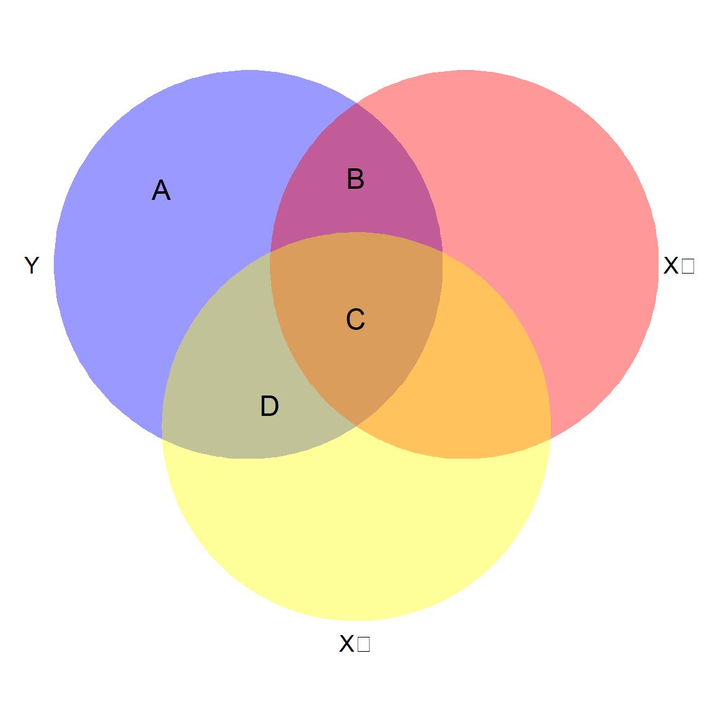
In figure 12.7, the circles represent the variability of data in the three variables. Because they are all related, the circles overlap.
Area A+B+C+D represents all the variability in the dependent variable to be explained (shaded in purple).
Area B+C+D represents R2 for the model as a whole because they represent the variability in the dependent variable that is shared with the two predictors combined.
Area A now represents the residual variance. If R2 is small, the unexplained variance in the dependent variable will be relatively large.
Area B+C represents the total shared variability between Y and X1. But notice that Area C is also shared with X2.
Area B by itself represents the unique relationship between Y and X1. This is the partial correlation that’s represented in the regression results – the extent to which X1 can predict Y with X2 held constant.
To compute partial correlations, you first calculate the residuals—the errors that remain after predicting the dependent variable using each independent variable. Then, you correlate these residuals with each other to determine the unique contribution of each predictor while controlling for the others.
An important takeaway is that partial correlations are not fixed values; they depend on the specific set of variables included in the model. As the relationships among independent variables change, the partial correlations will also adjust, reflecting the shifting influence of each predictor.
As those correlations change, so will the magnitude (and sometimes even the direction) of any given predictor variable on the dependent variable. Just picture the X2 circle up there – if it shifted down so that Area B grew and Area C got smaller, the regression coefficient for X1 would be larger.
Most of the time, partial correlations are smaller than the simple bivariate correlation between the independent variable and dependent variable, but not always. Sometimes one of your other predictors could actually suppress the relationship between the two variables, so the partial correlation is larger.
Now let’s look at our regression results again, this time with the partial correlation statistics included.
| Predictor | Unstandardized b | SE | Standardized β | Partial Correlation | Bivariate Correlation | t | p |
|---|---|---|---|---|---|---|---|
| Student-Teacher Ratio | -1.5 | 0.3 | -0.3 | -0.58 | -0.65 | -5.0 | < .001 |
| Parental Education Level | 2.0 | 0.5 | 0.1 | 0.49 | 0.55 | 4.0 | < .001 |
| School Funding | 0.2 | 0.4 | 2.0 | 0.03 | 0.15 | 0.5 | 0.619 |
| Free/Reduced Lunch Percentage | -1.2 | 0.3 | -0.5 | -0.49 | -0.55 | -4.0 | < .001 |
| Attendance Rate | 0.6 | 0.2 | 0.1 | 0.39 | 0.45 | 3.0 | 0.004 |
The bivariate correlation between standardized test scores and student-teacher ratio was -0.65, but the partial correlation is only –0.58. Removing the effects of the other predictors has “purified” the relationship. We can also see that while the original correlation between school funding and standardized test scores was 0.15, the partial correlation is even smaller, only 0.03. The correlation table just considers two variables at a time. With regression, each independent variable has a coefficient that is estimated after holding all the others constant (controlling for the other predictors).
Now we’ll look in more detail at the coefficients table, focusing on the independent variable of student-teacher ratio.
The unstandardized coefficient for reading tells us that, with the effect of the other predictors held constant (partialled out), each one-point increase in the student-teacher ratio is associated with a 1.5-point decrease in standardized test score.
This prediction is based on a sample, and we always have sampling errors. The value of 0.3 indicates the standard error of the associated regression coefficient estimate and is used for the statistical test.
To aid in interpretating your results, it is common to report the standardized coefficients, which are interpreted like z scores, and can be obtained by converting the raw data to their z score counterparts (measured in standard deviations above and below the mean) before running the regression.
The standardized coefficients tell us which independent variables are the most powerful predictors of the dependent variable.
To convert from unstandardized coefficients to standardized, we use the expression:
\[ \beta_{xp} = b_{xp}\frac{SD_Y}{SD_{xp}} \]
where \(\beta_{xp}\) represents the standardized slope associated with predictor p, \(b_{xp}\) is the unstandardized slope for predictor \(p\), \(SD_Y\) is the standard deviation of the dependent variable, and \(SD_{xp}\) is the standard deviation of predictor \(p\). Standardized slopes are typically included in computer output and reported as part of your results. Our result for the Student-Teacher ratio independent variable shows that with the effects of other predictors held constant, for each one standard deviation increase in Student-Teacher ratios, we expect standardized test scores to decrease 0.3 standard deviations. It can get a little confusing because people use either \(B\) or \(b\) to refer to regression coefficients, but if you see both \(\beta\) and \(b\), the former means standardized, and the latter is unstandardized.
We’re finally ready to test the null hypothesis about this individual predictor using \(\alpha = 0.05\). The table reports that the t statistic for student-teacher ratio is -5.0 and the p value shown in the table is \(p < 0.001\). This tells us that the student-teacher ratio is a significant predictor of standardized test scores.
After controlling for other predictors, the results show that the \(\beta\) coefficient for 4 predictors is significantly different from 0. However, we find that school funding is not, which is actually good news for the district because they spent years developing an equitable funding model to support student success.
12.5.5 Assessing Model Fit
Similar to what we learned earlier in the chapter, the basic measure of model-data fit is the squared multiple correlation, \(R^2\). The statistic can be calculated using:
\[ R^2 = \frac{SS_{Regression}}{SS_{Total}} \]
For our example, the coefficient of determination (\(R^2\)) is calculated as follows: \(R^22 = \frac{SS_{Regression}}{SS_{Total}} = \frac{2,500}{4,000} = 0.625 = 62.5%\). This means that \(62.5%\) of the variation in students’ standardized test scores is explained by the set of five predictors. However, it is important to note that this dataset was created for illustrative purposes. In real-world educational research, it is unlikely that such a high percentage of variance in standardized test scores would be explained by just five predictors, as many other factors influence student performance.
A larger \(R^2\) indicates a stronger model, meaning the independent variables collectively explain more of the variance in the dependent variable. However, as we have learned, \(R^2\) is biased because it tends to increase as more predictors are added, even if they do not meaningfully contribute to the model.
To address this issue, a less biased version, Adjusted \(R^2\), is reported. Adjusted R² accounts for the number of predictors and sample size, providing a more reliable measure of model fit. It is calculated using the following formula:
\[ R^2_{Adjusted} = 1 - \left( \frac{(1-R^2)(n-1)}{n-p-1} \right) = 1 - \left( \frac{(1- .625)(56-1)}{(56-5-1)} \right) = .5875 \]
As you can see from the formula, adjusted \(R^2\) depends on the sample size and number of predictors in the model. If the sample size is large enough, the values of \(R^2\) and adjusted \(R^2\) should be very similar. If the sample size is small and you have a large number of predictors, the discrepancy between \(R^2\) and adjusted \(R^2\) will be larger. In general, we recommend using adjusted \(R^2\) when reporting your results, but encourage you to check to see what is typical for studies in your field.
When reviewing regression results, it is important to assess whether multicollinearity may be influencing the model estimates. To do this, we examine two key diagnostics: Variance Inflation Factor (VIF) and Tolerance (the reciprocal of VIF). These metrics help determine the extent to which predictor variables are correlated with each other.
High VIF values or low Tolerance levels indicate potential multicollinearity, which can distort coefficient estimates and reduce the stability of the model. Evaluating these diagnostics ensures that the model specification is appropriate and helps identify whether adjustments, such as removing or combining variables, are necessary.
Variance Inflation Factors (VIF)
The Variance Inflation Factor (VIF) quantifies how much the variance of a regression coefficient is inflated due to multicollinearity among predictor variables. We can use multiple regression to calculate the degree of multicollinearity among independent variables, by making each independent variable a dependent variable predicted by all the others. We end up with \(R^2\) values for each of those regression models, indicating, just like with any other regression model, the percentage of the variance in one independent variable that is explained by the other independent variables. The VIF calculation utilizes these \(R^2\) values to diagnose the extent of multicollinearity, using the following formula:
\[ VIF_p = \frac{1}{1 - R^2_p} \]
The subscript p indicates the independent variable, and you calculate a VIF for each independent variable. When \(R^2\) equals zero, there is no multicollinearity, because the set of independent variables could not explain any of the variability in the remaining independent variable. In that case the fraction would be 1/1, so the lowest possible VIF is 1. But if you look at the equation, as \(R^2\) gets bigger, the denominator gets smaller, and VIF increases.
There are no hard rules about acceptable VIF values. However, Kutner et al. (2013) state “[a] maximum VIF value in excess of 10 is frequently taken as an indication that multicollinearity may be unduly influencing the least squares estimates” (p. 409). In models with VIF < 5, it further reduces the inflation of standard errors and therefore reduces the likelihood of Type II errors.
Tolerance
Tolerance is a statistical measure that indicates how much a particular predictor variable contributes to the overall variance in the dependent variable while accounting for the effects of other predictors. It is closely related to multicollinearity and serves as the reciprocal of the VIF.
\(\text{Tolerance} = (1 – R^2_p)\)
\(\text{Tolerance} = 1/VIF\)
The table below shows the relationship of VIF and Tolerance to \(r_p\) and \(R^2_p\). There is no new information here, as tolerance and VIF are based on the same calculations. They are just expressed in different forms, and you may see reference to one or the other, so it helps to be aware of how they are related. If you only had two predictors in your model, then \(r_p\) would be the same as the bivariate correlation between them. While sets of independent variables may correlate differently, that column can give you a sense of likely multicollinearity problems based on your preliminary review of the correlation table.
| VIF | \(r_p\) | \(R^2_p\) | Tolerance |
|---|---|---|---|
| 1 | 0.00 | 0.00 | 1.00 |
| 1.05 | 0.22 | 0.05 | 0.95 |
| 1.10 | 0.30 | 0.09 | 0.91 |
| 1.20 | 0.41 | 0.17 | 0.83 |
| 1.30 | 0.48 | 0.23 | 0.77 |
| 1.40 | 0.53 | 0.28 | 0.71 |
| 1.50 | 0.58 | 0.34 | 0.67 |
| 2.00 | 0.71 | 0.50 | 0.50 |
| 5.00 | 0.89 | 0.79 | 0.20 |
| 10.00 | 0.95 | 0.90 | 0.10 |
| \(\infty\) | 1.00 | 1.00 | 0.00 |
A Tolerance value below 0.1 indicates a serious multicollinearity problem, suggesting that a predictor shares a substantial amount of variance with other independent variables. It is important to remember that VIF and Tolerance are measures of the extent to which regression coefficients may be affected by multicollinearity. Higher VIF values and lower Tolerance values signal greater risk, potentially distorting coefficient estimates and reducing the reliability of the model.
Including more control variables or predictors in non-experimental or quasi-experimental designs is usually a good thing, as long as you are not adding so many predictors that you’re over-fitting the model. In theory, multicollinearity is not a problem if VIFs are lower than published rules of thumb (i.e., VIF < 10), or, more conservatively, VIF < 5. However, these rules of thumb do not protect against substantive changes in regression coefficient magnitude, so you can’t only rely on VIF and Tolerance values.
While addressing multicollinearity, it is important to balance reducing redundancy with maintaining theoretically important predictors. Simply removing variables based on VIF values alone can introduce omitted variable bias, potentially distorting the findings. Instead, these values should be considered alongside theoretical justification and empirical patterns in the data to ensure both statistical validity and substantive relevance.
12.5.6 Reporting Results of a Multiple Regression Analysis
There is no standard format to write up results, but we recommend including the following information.
Preliminary descriptive results
The number of cases used in your analysis
Correlations among dependent and independent variables, indicating if any variables have very low correlations
Whether or not the data meet the assumptions for multiple regression
Indicate whether or not there is a potential problem with multicollinearity
Indicate if any outliers exist
Regression results
Model fit (R2 and adjusted R2)
Coefficient estimates and standard errors
t statistic, df, and significance level of each predictor
APA style sample write up: A multiple regression analysis was conducted to examine the relationship between student-teacher ratio, parental education level, school funding per student, free/reduced lunch percentage, and student attendance rate with standardized test scores. The regression model included five predictors and was based on data from 56 schools.
The overall model was statistically significant, \(F(5, 50) = 16.67, \, p < .05\), indicating that at least one of the predictor variables significantly contributes to explaining the variance in standardized test scores. The model accounted for 62.5% of the variance in test scores, as indicated \(R^2\). The adjusted \(R^2\), which corrects for potential bias due to the number of predictors, was .588.
The results indicate that four of the five predictors significantly contribute to explaining standardized test scores. Specifically, student-teacher ratio, parental education level, free/reduced lunch percentage, and attendance rate were all statistically significant predictors (\(p < .05\)), while school funding per student was not significant (\(p = .619\)).
The student-teacher ratio had a significant negative association with standardized test scores (\(b = −1.5, \, SE = 0.3, \, p < .01\)), meaning that for every one-unit increase in student-teacher ratio, test scores decreased by 1.5 points, holding all other variables constant. The standardized coefficient (\(\beta = −0.3\)) indicates that one standard deviation increase in student-teacher ratio corresponds to a 0.3 standard deviation decrease in test scores.
Average parental education level was positively associated with test scores (\(b = 2.0, \, SE = 0.5, \, p < .01\)), indicating that an increase in parents’ education level corresponded to an increase in test scores by 2 points per year of additional education.
Free/reduced lunch percentage was negatively associated with test scores (\(b = −1.2, \, SE = 0.3, \, p < .01\)), suggesting that as the percentage of students on free/reduced lunch increases, test scores decrease.
Attendance rate was positively associated with test scores (\(b = 0.6, \, SE = 0.2, \, p < .01\)), indicating that students in schools with higher attendance rates tend to perform better.
School funding per student was not a significant predictor of test scores (\(b = 0.2, \, SE = 0.4, \, p = .619\)), indicating that after accounting for the other variables, funding alone did not explain additional variance in test scores. This finding aligns with the district’s efforts to implement an equitable funding model, suggesting that other factors may have a more direct impact on student performance.
12.6 Logistic Regression: Predicting Categorical Outcomes
Up to this point, we have focused on linear regression, which predicts a continuous dependent variable (Y) using one or more independent variables (X). However, many research questions involve categorical outcomes rather than continuous ones. For example, instead of predicting a student’s final exam score, we might want to determine whether a student passes or fails. In such cases, logistic regression is the appropriate statistical technique, as it models the probability of an outcome occurring based on predictor variables.
Logistic regression is a type of regression analysis used when the dependent variable is categorical, meaning it consists of two or more categories. Unlike linear regression, which assumes a continuous outcome, logistic regression models the probability that a given outcome occurs. The most common form is binary logistic regression, which predicts an outcome with two categories, such as pass/fail, admitted/not admitted, or employed/unemployed. When there are more than two categories, we can use multinomial logistic regression (for unordered categories) or ordinal logistic regression (for ordered categories).
In linear regression, we model the relationship between X and Y using the equation: Y = bX + a, where b is the slope and a is the intercept. However, this equation is inappropriate for categorical outcomes because it can yield values outside the range of 0 to 1, which are not valid probabilities. Instead, logistic regression models the log odds of an event occurring using the logistic function:
\[ log(\frac{p}{1-p}) = bX + a \]
where:
\(p\) is the probability of the event occurring,
\(\frac{p}{1-p}\) represents the odds of the event occurring,
\(log(\frac{p}{1-p})\) is the logit (log odds),
\(b\) is the regression coefficient, which represents the change in log odds of the outcome for a one-unit change in X, and
\(a\) is the intercept
To obtain the probability of the event occurring, we use the inverse logistic function:
\[ p = \frac{e^{(bX + a)}}{1 + e^{(bX + a)}} \]
This transformation ensures that predicted probabilities remain within the valid range of 0 to 1.
12.6.1 Interpreting Logistic Regression Coefficients
Because logistic regression models log odds rather than raw probabilities, interpreting coefficients requires some additional steps.
A positive coefficient (\(b > 0\)) means that as X increases, the probability of the event occurring increases.
A negative coefficient (\(b < 0\)) means that as X increases, the probability of the event occurring decreases.
The odds ratio (OR) is the exponentiated coefficient \(e^b\). An OR greater than 1 suggests that an increase in X increases the odds of the event occurring, while an OR less than 1 suggests a decrease in the odds.
Let’s walk through a quick example. Suppose we want to predict whether a student is admitted to college. As discussed earlier, dummy coding is used to include categorical variables in regression models by converting them into a series of binary (0 or 1) variables. Each dummy variable represents one of the categories of the original categorical variable, allowing the regression model to quantify the effects of the categorical predictor. This time let’s use dummy coding for our outcome variable where 1 = admitted and 0 = not admitted based on one’s SAT score (X). The logistic regression equation might look like this:
\[ \log\left(\frac{p}{1 - p}\right) = 0.005(\text{SAT}) - 3.5 \]
This equation tells us that for each one-point increase in SAT score, the log odds of admission increase by 0.005. To convert this into an odds ratio:
\[ e^{0.0005} \sim 1.005 \]
This means that for every one-point increase in SAT score, the odds of admission increase by approximately 0.5%.
12.6.2 Assumptions of Logistic Regression
While logistic regression does not assume normality or homoscedasticity like linear regression, it does require:
Binary or categorical dependent variable: The outcome must be categorical.
Independent observations: Each observation must be independent of others.
No perfect multicollinearity: Predictors should not be too highly correlated.
Linearity in the logit: The independent variables should have a linear relationship with the log odds of the outcome.
For educational researchers, logistic regression is particularly useful in analyzing outcomes related to student success, such as graduation likelihood, college acceptance, and course completion rates. By modeling the probability of categorical outcomes, educational researchers can identify key predictors of student achievement and inform policy decisions. For instance, understanding how standardized test scores, socioeconomic status, or attendance patterns impact student retention can help educators develop targeted interventions. Logistic regression provides a powerful method to translate complex educational data into actionable insights, ultimately contributing to more informed decision-making in educational settings.
Predicting an Outcome in R
In this section, we will demonstrate how to conduct and interpret simple linear regression, multiple linear regression, and logistic regression using educational data. The examples use the following variables from the PISA dataset:
PV1MATH: Math achievement score (continuous, outcome variable for linear regression)
MATHPERS: Effort and Persistence in Mathematics (continuous, predictor for simple and multiple regression)
GROSAGR: Growth Mindset (continuous, additional predictor for multiple regression)
MATHEASE: Perception of Mathematics as easier than other subjects (binary (0=No/1-Yes), outcome for logistic regression)
# Load required package
library(haven) # For reading SPSS files
library(tidyverse)
library(car) # For VIF and diagnostics
library(broom) # For tidy model summaries
library(psych) # For describe
library(performance) # For diagnostics
library(ResourceSelection) # For logistic regression goodness-of-fit
# Load the dataset
data <- read_sav("chapter12/chapter12data.sav")
# Clean/select variables
data <- data |> select(PV1MATH, MATHPERS, GROSAGR, MATHEASE) 1 Simple Linear Regression
Research Question: Does effort and persistence in mathematics (MATHPERS) predict math achievement (PV1MATH)?
1.1 Fit Simple Linear Regression
simple_lm <- lm(PV1MATH ~ MATHPERS, data = data)
summary(simple_lm)
Call:
lm(formula = PV1MATH ~ MATHPERS, data = data)
Residuals:
Min 1Q Median 3Q Max
-310.37 -68.50 -3.61 65.64 344.16
Coefficients:
Estimate Std. Error t value Pr(>|t|)
(Intercept) 463.62 1.55 299.18 <2e-16 ***
MATHPERS 16.13 1.52 10.61 <2e-16 ***
---
Signif. codes: 0 '***' 0.001 '**' 0.01 '*' 0.05 '.' 0.1 ' ' 1
Residual standard error: 94.06 on 3948 degrees of freedom
(602 observations deleted due to missingness)
Multiple R-squared: 0.02773, Adjusted R-squared: 0.02749
F-statistic: 112.6 on 1 and 3948 DF, p-value: < 2.2e-16Interpretation:
The regression analysis found a significant positive relationship: for each one point increase in effort and persistence, math achievement scores increased by approximately 16.13 points (\(b=16.13,SE=1.52,t=10.61,p<.01\)).The model explained about 2.8% of the variance in math achievement (\(R^2 = .028\)). The residual standard error was 94.06, indicating that, on average, students’ actual math scores deviated from the predicted scores by about 94 points. Although the effect size is modest, the result suggests that students who put in more effort and persist in mathematics tend to score higher on the PISA math achievement test.
1.2 Assumptions Checking
# Linearity, Homoscedasticity, Normality, Outliers
par(mfrow = c(2, 2))
plot(simple_lm) 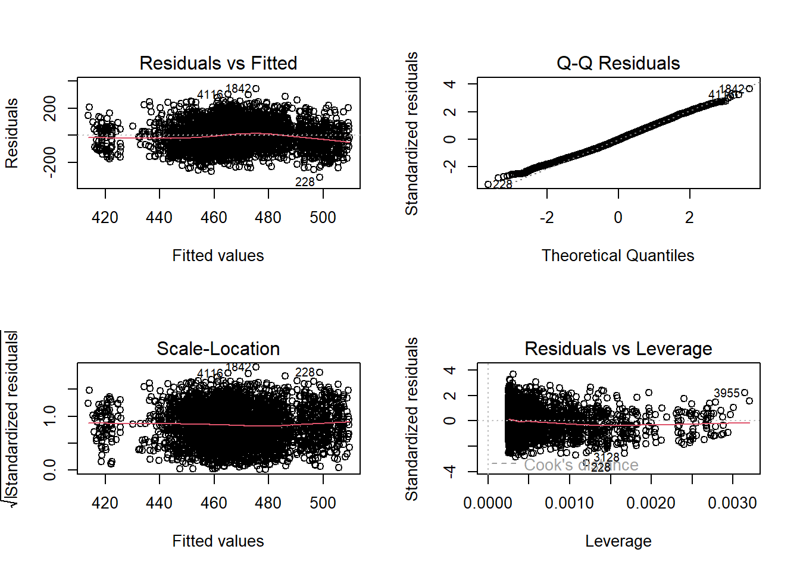
par(mfrow = c(1, 1))
# Additional: Independence is typically assumed in survey data Interpretation:
Linearity & Homoscedasticity: The Residuals vs Fitted (upper left) and Scale-Location (lower left) plots show that residuals are roughly evenly spread around zero across fitted values, without clear patterns or fanning, suggesting linearity and constant variance (homoscedasticity).
Normality: The Q-Q plot of residuals displays points closely following the diagonal line, indicating that residuals are approximately normally distributed.
Influential Points: The Residuals vs Leverage plot shows that most points have low leverage, with no point deviating significantly from the rest, suggesting no influential outliers.
2 Multiple Linear Regression
For the multiple linear regression, we will include both effort and persistence and growth mindset as predictors of math achievement.
Research Question: Do effort and persistence (MATHPERS) and growth mindset (GROSAGR) jointly predict math achievement (PV1MATH)?
2.1 Fit Multiple Linear Regression
multi_lm <- lm(PV1MATH ~ MATHPERS + GROSAGR, data = data)
summary(multi_lm)
Call:
lm(formula = PV1MATH ~ MATHPERS + GROSAGR, data = data)
Residuals:
Min 1Q Median 3Q Max
-278.82 -65.05 -2.72 63.29 329.67
Coefficients:
Estimate Std. Error t value Pr(>|t|)
(Intercept) 459.327 1.563 293.820 <2e-16 ***
MATHPERS 13.740 1.506 9.121 <2e-16 ***
GROSAGR 23.645 1.831 12.917 <2e-16 ***
---
Signif. codes: 0 '***' 0.001 '**' 0.01 '*' 0.05 '.' 0.1 ' ' 1
Residual standard error: 92.17 on 3929 degrees of freedom
(620 observations deleted due to missingness)
Multiple R-squared: 0.06738, Adjusted R-squared: 0.0669
F-statistic: 141.9 on 2 and 3929 DF, p-value: < 2.2e-16Interpretation:
(Check section Reporting Results of a Multiple Regression Analysis for APA-style sample write-up)
The multiple linear regression show that both predictors have significant positive effects on math achievement: for each one point increase in effort and persistence, math scores increased by about 13.74 points (\(b=13.74,SE=1.51,p<.01\)), and for each one standard deviation increase in growth mindset, scores increased by about 23.65 points ($b=23.65,SE=1.83,p<.01 \(). The model explained approximately 6.7% of the variance in math achievement scores (\)R^2=.067$), with a residual standard error of 92.17.
Compared to the previous simple regression model that included only effort and persistence, adding growth mindset as a second predictor increased the proportion of explained variance from 2.8% to 6.7%. This suggests that considering both effort and growth mindset provides a better prediction of students’ math achievement.
2.2 Multicollinearity & Assumptions Checking
vif(multi_lm) MATHPERS GROSAGR
1.015794 1.015794 par(mfrow = c(2, 2))
plot(multi_lm) 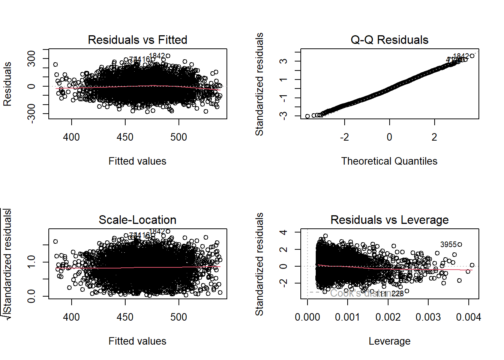
par(mfrow = c(1, 1)) Interpretation:
VIFs for both predictors are approximately 1.02, which is well below the common threshold of 5. This indicates that multicollinearity is not a concern in this model, and the two predictors are not highly correlated with each other.
The diagnostic plots (as those for the simple linear regression) indicate that the assumptions of linearity, homoscedasticity, normality of residuals, and the absence of influential outliers are generally met for this multiple linear regression model.
3 Logistic Regression
Research Question: Does math achievement (PV1MATH) predict whether a student perceives mathematics as easier than other subjects (MATHEASE)?
3.1 Prepare Outcome Variable
data$MATHEASE <- factor(data$MATHEASE, levels = c(0, 1), labels = c("No", "Yes"))
data$MATHEASE |> table()
No Yes
3497 501 Among the student sample, 3497 perceived mathematics as easier than other subjects, while 501 did not.
3.2 Fit Logistic Regression
logit_model <- glm(MATHEASE ~ PV1MATH, data = data, family = "binomial")
summary(logit_model)
Call:
glm(formula = MATHEASE ~ PV1MATH, family = "binomial", data = data)
Coefficients:
Estimate Std. Error z value Pr(>|z|)
(Intercept) -3.5726468 0.2505450 -14.260 < 2e-16 ***
PV1MATH 0.0034039 0.0005017 6.785 1.16e-11 ***
---
Signif. codes: 0 '***' 0.001 '**' 0.01 '*' 0.05 '.' 0.1 ' ' 1
(Dispersion parameter for binomial family taken to be 1)
Null deviance: 3017.5 on 3997 degrees of freedom
Residual deviance: 2971.0 on 3996 degrees of freedom
(554 observations deleted due to missingness)
AIC: 2975
Number of Fisher Scoring iterations: 4Interpretation:
A logistic regression was conducted to examine whether students’ math scores predict the likelihood that they perceive mathematics as easier than other subjects. The results show a significant positive effect of math score (\(b=0.0034, SE=0.0005,z=6.79,p<.01\)). This means that for each point increase in the math score, the odds of perceiving math as easier increase by 0.34% (odds ratio: \(e^{0.0034} = 1.0034\)). In other words, higher math achievement is associated with a slightly higher probability of perceiving math as easier than other subjects.
Predicting the outcomes in SPSS
In this section, we will demonstrate how to conduct and interpret simple linear regression, multiple linear regression, and logistic regression using educational data. The examples use the following variables from the PISA dataset:
PV1MATH: Math achievement score (continuous, outcome variable for linear regression)
MATHPERS: Effort and Persistence in Mathematics (continuous, predictor for simple and multiple regression)
GROSAGR: Growth Mindset (continuous, additional predictor for multiple regression)
MATHEASE: Perception of Mathematics as easier than other subjects (binary (0=No/1-Yes), outcome for logistic regression)
1 Simple Linear Regression
Research Question: Does effort and persistence in mathematics (MATHPERS) predict math achievement (PV1MATH)?
12.7 1.1 Fit Simple Linear Regression
To fit a simple linear regression model in SPSS, follow these steps:
Click Analyze > Regression > Linear…
Move PV1MATH to the Dependent box.
Move MATHPERS to the Independent(s) box.
Click Statistics… and check Estimates, Confidence intervals, Model fit, R squared change, and Descriptives.
Click Continue, then OK.
Then you will get the following results:
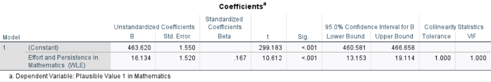
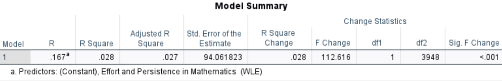
Interpretation: The regression analysis found a significant positive relationship: for each one point increase in effort and persistence, math achievement scores increased by approximately 16.13 points (\(b=16.13, \,SE=1.52,\, t=10.61,\, p<.05,\, 95\% \, CI [13.15, 19.11]\)).The model explained about 2.8% of the variance in math achievement ( \(R^2 = .028\)). The residual standard error was 94.06, indicating that, on average, students’ actual math scores deviated from the predicted scores by about 94 points. Although the effect size is modest, the result suggests that students who put in more effort and persist in mathematics tend to score higher on the PISA math achievement test.
1.2 Assumptions Checking
To check the regression assumptions in SPSS:
Go back to the Linear Regression dialog we used in
Click Plots…
Move *ZRESID (standardized residuals) to the Y box.
Move *ZPRED (standardized predicted values) to the X box.
Check Histogram and Normal probability plot.
Click Continue.
Click OK to generate the diagnostic plots.
SPSS will produce the following plots:
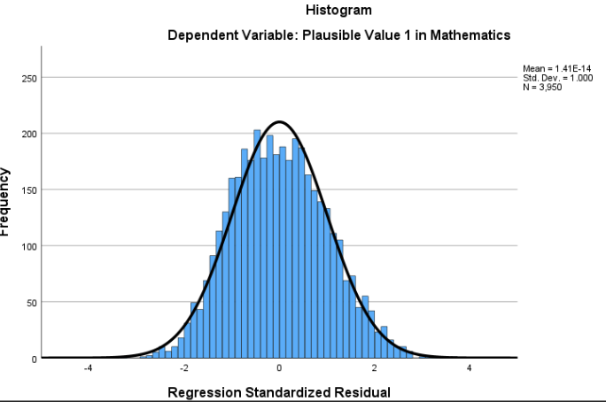
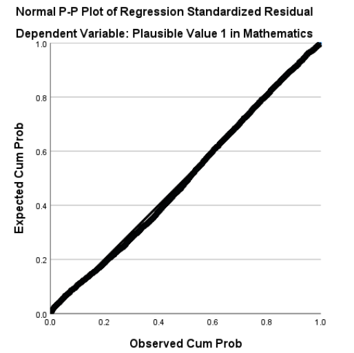
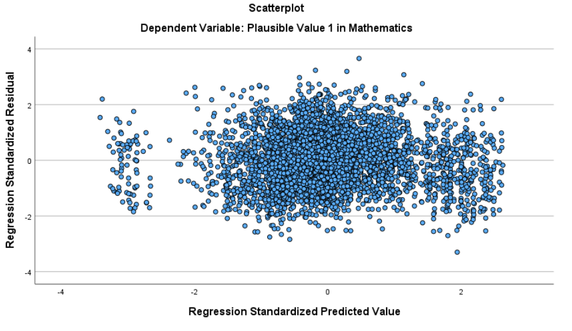
Interpretation:The above figures separately suggest:
The Histogram of Standardized Residuals shows an approximately bell-shaped distribution centered at 0, supporting normality.
In the Normal P-P Plot, points follow the diagonal closely, confirming residuals are roughly normal. We can also see Standardized residuals all fall within \(\pm3\), suggesting no highly influential outliers.
In the Scatterplot of Standardized Residuals vs. Predicted Values, residuals are randomly scattered without a clear funnel pattern, suggesting linearity and homoscedasticity.
Overall, the model meets the assumptions of linearity, homoscedasticity, and normality of residuals, with no problematic outliers. The regression results can be interpreted with confidence.
2 Multiple Linear Regression
For the multiple linear regression, we will include both effort and persistence and growth mindset as predictors of math achievement.
Research Question: Do effort and persistence (MATHPERS) and growth mindset (GROSAGR) jointly predict math achievement (PV1MATH)?
2.1 Fit Multiple Linear Regression
To fit a multiple linear regression model in SPSS, follow the steps below:
Click Analyze > Regression > Linear…
Move PV1MATH to Dependent.
Move MATHPERS and GROSAGR to Independent(s).
Click Statistics… and check Estimates, Confidence intervals, Model fit, R squared change, Descriptives.
Click Continue and OK.
Then you will get the following results:
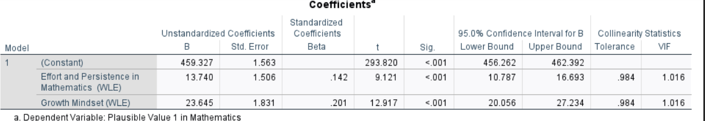
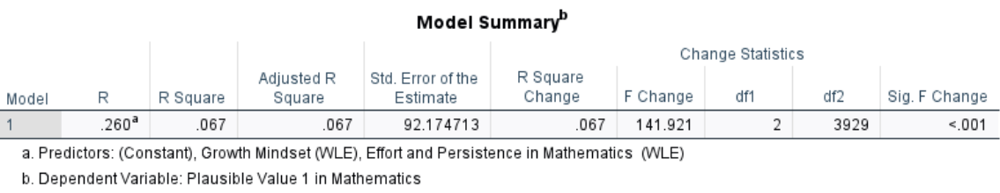
Interpretation:
(Check section Reporting Results of a Multiple Regression Analysis for APA-style sample write-up)
The multiple linear regression show that both predictors have significant positive effects on math achievement: for each one point increase in effort and persistence, math scores increased by about 13.74 points ($b=13.74, ,SE=1.51, ,p<.01 \(), and for each one standard deviation increase in growth mindset, scores increased by about 23.65 points (\)b=23.65,, SE=1.83,, p<.01\(). The model explained approximately 6.7% of the variance in math achievement scores (\)R^2=.067$), with a residual standard error of 92.17.
Compared to the previous simple regression model that included only effort and persistence, adding growth mindset as a second predictor increased the proportion of explained variance from 2.8% to 6.7%. This suggests that considering both effort and growth mindset provides a better prediction of students’ math achievement.
2.2 Multicollinearity & Assumptions Checking
To check the regression assumptions in SPSS:
Go back to the Linear Regression dialog used in 2.1.
Click Statistics… and make sure Collinearity diagnostics is checked.
Click Plots…
Move *ZRESID (standardized residuals) to the Y box.
Move *ZPRED (standardized predicted values) to the X box.
Check Histogram and Normal probability plot.
Click Continue.
Check Partial plots to see the linear relationship for each predictor controlling for the other.
Click OK to generate the diagnostic plots and the collinearity diagnostics table.
SPSS will produce the following plots:
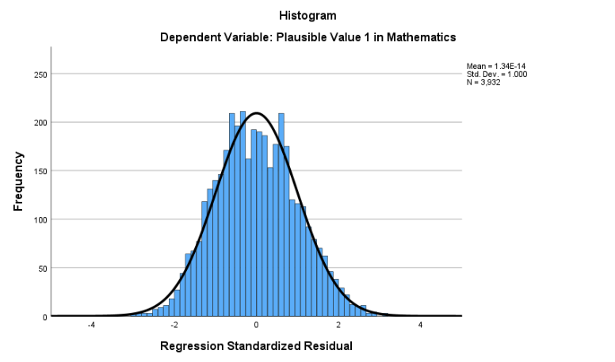
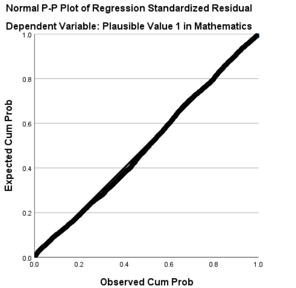
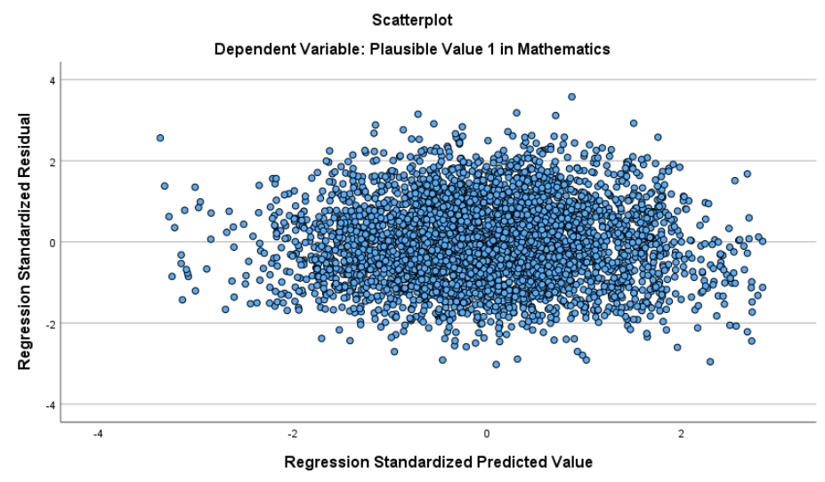
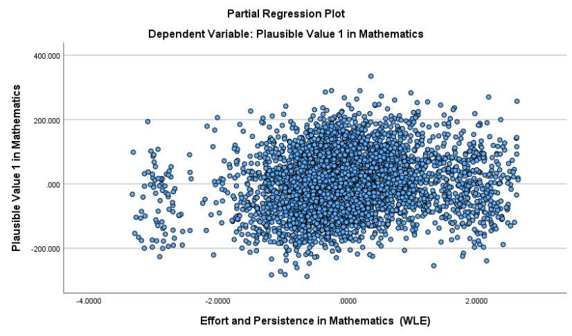
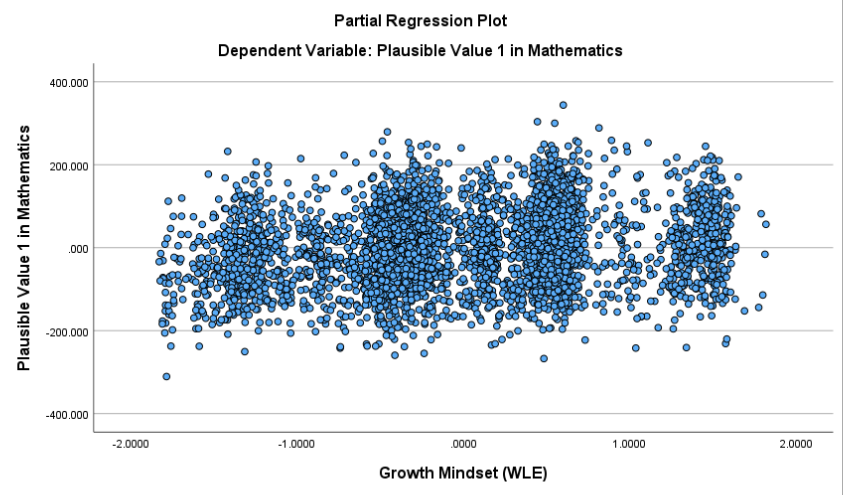
Interpretation:
The above figures separately suggest:
The Histogram of Standardized Residuals shows an approximately bell-shaped distribution centered at 0, supporting the normality assumption.
The Normal P-P Plot shows points closely following the diagonal line, confirming that residuals are roughly normal.
In the Scatterplot of Standardized Residuals vs. Predicted Values, the residuals are randomly scattered without a clear funnel pattern, suggesting that the assumptions of linearity and homoscedasticity are basically satisfied.
The partial regression plots indicate that each predictor has an approximately linear relationship with the outcome after controlling for the other predictor. Standardized residuals all fall within \(\pm3\), suggesting no highly influential outliers.
In addition, the Collinearity Diagnostics table shows VIF values near 1, below common threshold of 5, indicating no concern for multicollinearity.
Overall, the multiple regression model meets the assumptions of linearity, homoscedasticity, and normality of residuals, with no problematic outliers or multicollinearity concerns. The regression results can be interpreted with confidence.
3 Logistic Regression
Research Question: Does math achievement (PV1MATH) predict whether a student perceives mathematics as easier than other subjects (MATHEASE)?
To fit a logistic regression model in SPSS, follow the steps below:
Click Analyze > Regression > Binary Logistic…
Move MATHEASE to Dependent.
Move PV1MATH to Covariates.
Click Options… to select CI for exp(B) and Hosmer-Lemeshow goodness-of-fit.
Click Continue and OK.
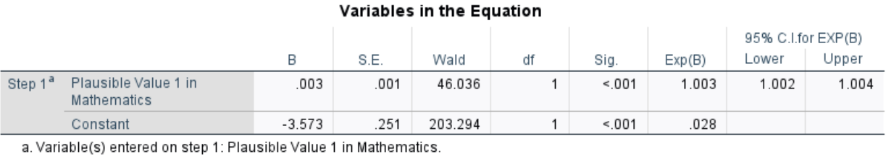
Interpretation:
A logistic regression was conducted to examine whether students’ math scores predict the likelihood that they perceive mathematics as easier than other subjects. The results show a significant positive effect of math score (\(b=0.003, \, SE=0.001, \, Wald \, \eta^2²=46.036, \,p<.01\)). This means that for each point increase in the math score, the odds of perceiving math as easier increase by 0.3% (odds ratio: \(e^{0.003} = 1.003\)). In other words, higher math achievement is associated with a slightly higher probability of perceiving math as easier than other subjects.
Conclusion
Understanding and applying regression analysis is a critical skill for interpreting relationships between variables and making data-driven predictions. This chapter has provided a comprehensive exploration of both simple and multiple regression techniques, emphasizing their theoretical underpinnings, assumptions, and practical applications. By mastering these concepts, researchers and practitioners can build models that not only identify meaningful relationships but also provide robust predictions. Regression analysis is a powerful tool that, when used responsibly and with a solid theoretical foundation, enables a deeper understanding of complex phenomena. As you continue to practice these techniques, always remember to prioritize sound research design and thoughtful interpretation of results to ensure meaningful and actionable insights.
Key Takeaways for Educational Researchers from Chapter 12
Ensuring regression assumptions to improve educational data analysis. Before conducting a regression analysis in education research, it is crucial to verify that the assumptions of the model (such as linearity, independence of errors, homoscedasticity, and multicollinearity) are met. For instance, when analyzing student achievement, failing to check these assumptions can lead to incorrect conclusions about the impact of factors like teacher effectiveness or school funding. If errors are correlated (e.g., students within the same classroom share similar unmeasured characteristics), standard errors will be underestimated, leading to misleading significance tests.
Addressing multicollinearity to accurately identify key educational predictors.
When independent variables are highly correlated, it becomes difficult to determine their unique contributions to outcomes. In education research, factors such as socioeconomic status (SES) and parental education are often correlated, making it essential to assess Variance Inflation Factors (VIF) and tolerance to detect multicollinearity. A high VIF may indicate that two or more predictors are measuring similar underlying constructs, requiring researchers to consider alternative modeling strategies.Interpreting omnibus and individual tests to understand educational interventions.
The F test in regression helps determine whether the overall model explains a significant amount of variance in an outcome like student test scores or graduation rates. However, even if the overall model is significant, it does not mean that every predictor is important. Education researchers must follow up with t tests to identify which specific factors (such as teacher-student ratios, school funding, or instructional methods) are significantly related to student success. This ensures that resources and interventions are directed toward the most impactful variables.Using Adjusted \(R^2\) to avoid overfitting in educational models. While a high \(R^2\) suggests a strong model, it can be misleading in education research if too many predictors are included, leading to overfitting. For example, if a researcher includes every possible student characteristic in a model predicting standardized test scores, the model may explain a large proportion of variance but may not generalize to other student populations. The adjusted \(R^2\) accounts for the number of predictors and sample size, helping researchers avoid inflated model performance and ensure real-world applicability.
Distinguishing between standardized and unstandardized coefficients for policy and practice. In education research, unstandardized coefficients (\(b\)) provide real-world interpretations, such as “for every additional student per teacher in a classroom, student test scores decrease by 1.5 points.” This is useful for policymakers when making funding or curriculum decisions. On the other hand, standardized coefficients (\(\beta\)) allow comparisons across different factors, such as whether attendance rates or teacher qualifications have a stronger influence on student achievement. Using both types of coefficients helps translate statistical findings into actionable policy recommendations.
Using regression as a tool to inform, not as a definitive answer. Even when a regression model produces statistically significant results, education researchers must critically evaluate the findings in context. A significant predictor does not necessarily imply causation—just because school funding is correlated with student performance does not mean increasing budgets alone will improve outcomes. Additionally, omitted variables, such as classroom climate or extracurricular involvement, may introduce bias. Researchers should integrate regression results with educational theory, qualitative insights, and policy considerations to develop more holistic recommendations for improving student learning and success.
Key Definitions for Chapter 12
Criterion variable, or to-be-predicted variable (Y) – the variable with unknown values that can be predicted or estimated, given known values of the predictor variable. We sometimes call this variable a dependent variable (DV), or an outcome variable.
Dummy coding is a method of converting categorical variables into a set of binary variables (0s and 1s) that can be used as predictors in regression and other statistical models.
Linear regression is a statistical procedure used to determine an equation of a regression line for a set of data points, and to determine the extent to which the regression equation can be used to predict values of one variable, given known values of a second variable in a population.
Logistic regression is a type of regression analysis used when the dependent variable is categorical, meaning it consists of two or more categories.
Multicollinearity occurs when there is a strong linear relationship between two or more independent variables in a regression model.
Multiple regression uses two or more predictors, or independent variables (IVs), to predict variation in a quantitative outcome, or dependent variable (DV).
The omnibus hypothesis test assesses whether the overall model is statistically significant. Specifically, it tests the null hypothesis that all regression coefficients for the predictors (except the intercept) are equal to zero.
The ordinary least squares (OLS) regression line is a statistical method used to find the best-fitting straight line through a set of data points. This line minimizes the sum of the squared differences (residuals) between the observed data points and the values predicted by the line.
Overfitting in the context of multiple regression occurs when the model is too complex and fits the training data too closely, capturing noise or random fluctuations rather than the true underlying relationship between the variables in the population.
Partialling means separating the effects of one predictor from the others.
Predictor variable, or known variable (X) – the variable with values that are known and can be used to predict values of another variable. We also call this variable an independent variable (IV).
The proportion of variance explained in regression is a measure of how well the independent variable(s) explain the variability in the dependent variable. This measure is often expressed as the coefficient of determination (\(r^2\) or \(R^2\)).
Tolerance is a statistical measure that indicates how much a particular predictor variable contributes to the overall variance in the dependent variable while accounting for the effects of other predictors. It is closely related to multicollinearity and serves as the reciprocal of the VIF.
The Variance Inflation Factor (VIF) quantifies how much the variance of a regression coefficient is inflated due to multicollinearity among predictor variables.
Check Your Understanding
What does the slope (b) in a simple linear regression equation represent?
The predicted value of Y when X = 0
The change in X relative to Y
The change in Y for a one-unit change in X
The coefficient of determination
What does \(R^2\) represent in simple linear regression analysis?
The correlation between independent variables
The proportion of variance in Y explained by X
The slope of the regression line
The standard error of the residuals
What does tolerance measure in regression analysis?
The extent of multicollinearity among independent variables
The proportion of variance in the dependent variable explained by predictors
The normality of residuals
The degree of model fit
What happens if a model includes highly correlated independent variables?
The dependent variable becomes unreliable
The coefficients of the independent variables become unstable
The model fit (\(R^2\)) will always decrease
The assumption of linearity is violated
What does homoscedasticity mean in regression analysis?
The residuals have a consistent spread across all predicted values
The independent variables are not correlated
The predictors have no relationship with the error term
The regression coefficients are stable across models